Part 7 Regression Discontinuity, Part 2
This is Part 2 of regression discontinuity (RD) designs. This section provides an illustration of the steps for examining assumptions and some more advanced methods for estimating the effect. Most of this lesson came from a 2016 workshop in quasi-experimental designs that was provided by the Institute for Policy Research at Northwestern University and sponsored by the Institute of Education Sciences of the U.S. Department of Education. Much of the credit for the R code goes to Dr. Peter Steiner, who was an instructor at that workshop. I have adapted this code and added functions from packages. Any mistakes are due to my own misunderstandings and modifications.
The data set used in this example includes an artificial, modified, non-representative, set of data that are similar to what had been used in an RD analysis in the evaluation of five state pre-Kindergarten programs (Wong et al., 2008). The evaluation took advantage of states’ eligibility cutoffs for entry into pre-Kindergarten programs, where older children with birthdays before the state cutoff were admitted into pre-K programs for the year and children with birthdays that occurred after the state cutoff were required to wait another year for entry into pre-K. The results in my demonstration are only for learning about these decisions in RDD; they are not to be used to draw conclusions about actual Pre-K programs.
The outcomes were measured in the fall, when the treatment-group children had completed pre-K and were in kindergarten and when the comparison-group children had just started the state pre-K program. The outcomes included the Picture Peabody Vocabulary Test (PPVT), an early math test, and a print awareness skills test (PA). The data set includes several baseline demographic variables that are measures of gender, race and ethnicity, home language, and socioeconomic status.
There were issues with non-compliance: Some students who were supposed to enter pre-K were delayed a year, constituting no-shows, and some students who were supposed to wait a year entered pre-K early, constituting the crossovers. Because these are not the actual data used in the Wong, et al. (2008) study, our results will differ from what was presented in their paper.
We’ll use several packages:
- rdd (Dimmery, 2016),
- rddensity (Cattaneo et al., 2021),
- rddtools (Stigler & Quast, 2021),
- rdrobust (Calonico et al., 2021), and
- sem (Fox et al., 2020).
7.1 Here are the steps we will take:
- Get to know our data by examining the treatment assignment rule and compliance
- Examine evidence of units’ “sorting” at the cutoff
- Test pre-analysis assumptions
- There is no sorting around the cut-off (the continuity assumption)
- There are no discontinuities in the covariates or pseudo-outcomes
- There are no unintended discontinuities in the outcome (placebo tests).
- Examine functional form
- Graphs from sharp RD parametric models
- Estimate sharp RD treatment effects
- Fitting a parametric model
- Fitting non-parametric models
- Including covariates
- Conduct a sensitivity analysis
- Account for fuzziness
- Fitting a parametric fuzzy RD model
- Fitting a non-parametric fuzzy RD model
- Including covariates
7.2 The Data
Let’s import the data.36
prek <- read.csv("PreK.csv")
str(prek)## 'data.frame': 1487 obs. of 17 variables:
## $ childid : int 50044 50045 50046 50047 50056 50061 50062 50063 50064 50065 ...
## $ schcode : int 416 416 416 416 566 566 566 566 566 566 ...
## $ cutdate : chr "Fri 10/1/99" "Fri 10/1/99" "Fri 10/1/99" "Fri 10/1/99" ...
## $ ppvt : int 47 48 49 76 77 64 72 50 70 85 ...
## $ pa : int 30 10 29 19 27 28 30 9 35 34 ...
## $ wjraw : int 13 12 15 12 21 14 18 7 19 18 ...
## $ avar : int 210 243 128 116 204 102 252 224 24 277 ...
## $ treatment : int 1 1 1 1 1 1 1 1 1 1 ...
## $ takeup : int 1 1 1 0 1 1 1 1 1 1 ...
## $ female : chr "male" "female" "male" "female" ...
## $ r_black : int 1 0 0 1 0 0 0 0 0 0 ...
## $ r_hispanic: int 0 0 0 0 0 0 0 0 0 0 ...
## $ r_white : int 0 0 0 0 0 0 0 0 0 0 ...
## $ fl_yes : int 1 1 1 1 1 1 0 1 0 1 ...
## $ hl_english: int 1 1 1 1 1 1 1 1 1 1 ...
## $ hl_spanish: int 0 0 0 0 0 0 0 0 0 0 ...
## $ hl_other : int 0 0 0 0 0 0 0 0 0 0 ...Here is a description of the variables. Dummy-coded variables have “(1,0)” in their descriptions.
| Treatment variable | Description |
|---|---|
avar |
The assignment variable is birthday, coded as the number of days away from the cutoff, which is centered at zero. Birthdays falling before the cutoff are positive values, which assigns the child to the treatment group, to receive the pre-k treatment. Birthdays falling after the cutoff are negative values, which assigns them to the control group, who are supposed to wait a year before receiving the pre-k treatment. |
treatment |
Assigned to Treatment (Treatment = 1 & Control = 0) |
takeup |
Attended pre-K (1/0) |
cutdate |
Cutoff threshold day, which depends on the region |
| Outcomes | |
|---|---|
ppvt |
Score on the Picture Peabody Vocab Test (or its Spanish counterpart, TVIP) |
pa |
Print Awareness raw score |
wjraw |
Woodcock-Johnson raw score |
| ID variables | |
|---|---|
childid |
Child ID |
schcode |
School ID (we will ignore this) |
| Control variables | |
|---|---|
female |
Child is female (factor, with levels “female” & “male”) |
r_black |
Child race = Black (1/0) |
r_hispanic |
Child race = Hispanic (1/0) |
r_white |
Child race = White (1/0) |
fl_yes |
Child = Yes free lunch (1/0) |
hl_english |
Home language is English (1/0) |
hl_spanish |
Home language is Spanish (1/0) |
hl_other |
Home language is neither English nor Spanish (1/0) |
Let’s create a numeric version of the gender covariate (female).
Based on our str(prek) output, female was read in as a character variable. Let’s create a factor version of this and verify what the levels are. We expect, based on the description of the data, for there to be two levels, but it is possible there are others in the data or that there was a typo, such as mlae instead of male, which would be flagged as a separate level. The levels() function provides a handy way to check this.
prek$femaleF <- factor(prek$female)
levels(prek$femaleF)## [1] "female" "male"Let’s print the first five observations to see if the results look how we expect:
prek[1:5, c("female", "femaleF")]## female femaleF
## 1 male male
## 2 female female
## 3 male male
## 4 female female
## 5 male maleNow we have a factor version of the variable, femaleF, with “female” coded as the first level and “male” as the second. If we coerced this factor variable into a numeric variable, we would have a vector of \(1\text{s}\) and \(2\text{s}\), in this same order. Let’s create a numeric version of this variable so that \(\text{female} = 1\) and \(\text{male} = 0\). Let’s call this new variable female, thereby replacing the original character version of the variable.37
prek$female <- -(as.numeric(prek$femaleF) - 2)
prek[1:5, c("female", "femaleF")]## female femaleF
## 1 0 male
## 2 1 female
## 3 0 male
## 4 1 female
## 5 0 maleNow we can use this numeric version of the variable, we can use the same functions we use for the other covariates, all of which are numeric (strictly speaking, they are integer, but this makes no difference for our mathematical operations).
7.3 Examine the Data, the Assignment-rule Adherence, and Compliance
We can see, at first glance from the summary and histogram that there is not a uniform distribution. More kids were qualified to be in the treatment because of their reported age. This distribution of birthdays might be unlikely in the population (which we’ll examine more closely in a minute). Notice that the mean is 28 days away from (positive values are older) than the cut score and that the median is 43 days away.
summary(prek$avar) ## Min. 1st Qu. Median Mean 3rd Qu. Max.
## -299.0 -112.5 43.0 28.1 174.0 299.0hist(prek$avar,
main = NULL,
xlab = "Assignment variable \n (birthday in days away from cutoff)")
abline(v = 0,
lty = 1,
col="blue")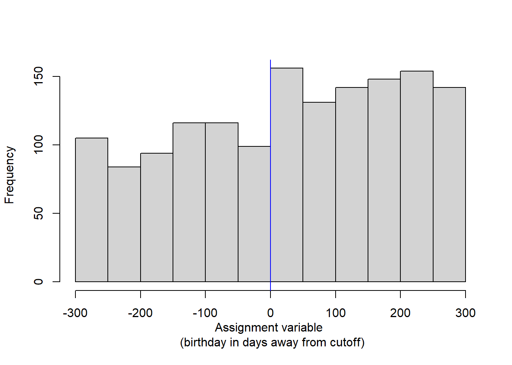
7.3.1 Assignment-rule adherence
Let’s make sure the assignment rule was applied correctly. The avar variable is centered, so all birthdays that are negative should be in the control control condition treatment = 0, and all that are positive should be in the treatment condition treatment = 1. If the assignment rule was not adhered to in assigning units to treatment conditions, the validity of our claims about the effect of the intent-to-treat will be at stake.
tabout <- with(prek, table(avar, treatment))
tabout[244:264, ]## treatment
## avar 0 1
## -13 1 0
## -12 1 0
## -11 3 0
## -9 1 0
## -8 1 0
## -7 2 0
## -6 1 0
## -5 3 0
## -4 3 0
## -3 4 0
## 0 0 2
## 1 0 8
## 2 0 4
## 3 0 5
## 4 0 3
## 5 0 1
## 6 0 3
## 7 0 2
## 8 0 4
## 9 0 2
## 10 0 6The indexing in our object, tabout[244:264, ], is just so we can look at the frequency of birthdays around the cut. We should examine the entire table rather than this small window. This assignment to treatment and control is deterministic and seems to be followed exactly as planned. Let’s see a plot of this:38
plot(jitter(prek$treatment, .05) ~ prek$avar,
main = "Treatment assignment rule",
ylab="Treatment assignment",
xlab= "Assignment variable" )
abline(v = 0, lty = 2, col="blue")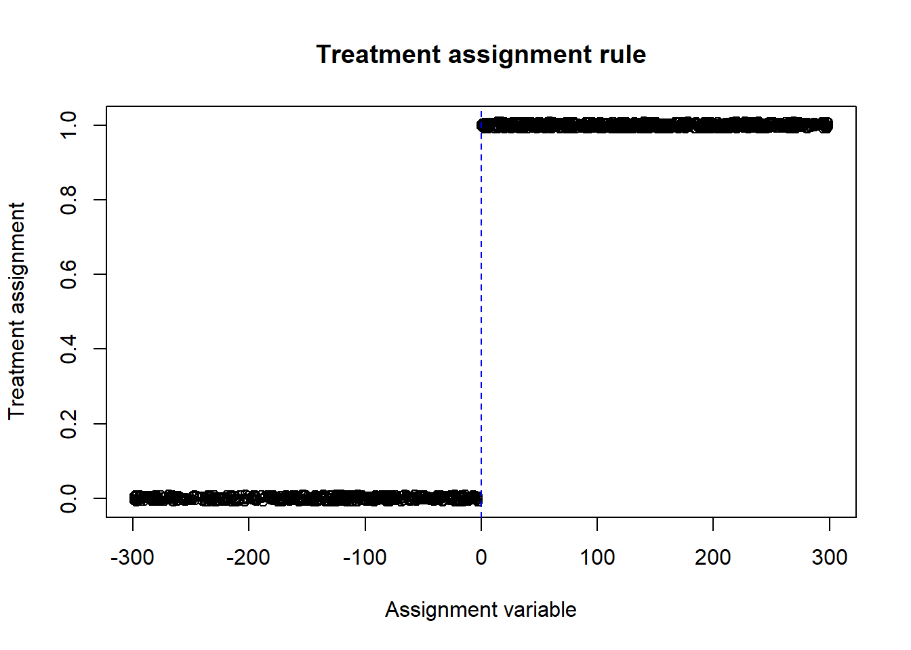
This simply shows that we did not incorrectly assign children to one condition or the other.
7.3.2 Compliance
Now we can check compliance. We can look at our small window around the assignment variable as a example with the table() function.
with(prek, table(avar, takeup))[244:264, ]## takeup
## avar 0 1
## -13 1 0
## -12 1 0
## -11 2 1
## -9 1 0
## -8 1 0
## -7 2 0
## -6 1 0
## -5 2 1
## -4 3 0
## -3 3 1
## 0 0 2
## 1 1 7
## 2 0 4
## 3 2 3
## 4 0 3
## 5 0 1
## 6 1 2
## 7 1 1
## 8 0 4
## 9 1 1
## 10 1 5Even at this window around the cutoff point, we see that some children assigned to the control group got into the treatment group. For example, there were four children who were 3 days too young to get into the treatment group; of those, 1 child managed to get into the pre-K program, whereas the other 3 stayed in their control-group status. On the other side, there were 8 children who were 1 day older than the cutoff, so they were eligible to get into the pre-K program; however, 1 of those children did not take-up this treatment.
A plot of the non-compliance is worth reporting:
par(bty = "l")
plot(jitter(prek$takeup, .05) ~ prek$avar,
cex = .5,
main = "Treatment receipt",
ylab="Treatment takeup",
xlab= "Assignment variable" )
abline(v = 0, lty = 2)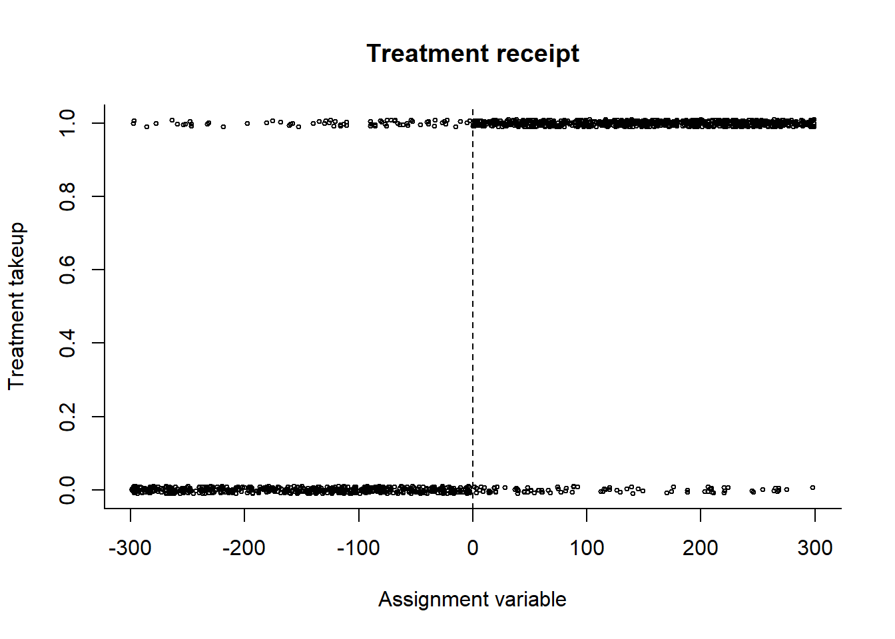
We see a lot of observations not complying with their assignment. However, we also see more people complying than not complying. Let’s examine the compliance table, and the proportion:
(comp <- with(prek, table(treatment, takeup)))## takeup
## treatment 0 1
## 0 542 70
## 1 86 789So, there are 70 + 86 noncompliars (70 crossovers & 86 no-shows). Let’s take a look at the compliance proportions by the assigned treatment (proportion of the row margin):
round( prop.table(comp, 1) , 3)## takeup
## treatment 0 1
## 0 0.886 0.114
## 1 0.098 0.90290% of those assigned to enter pre-k (treatment) actually took it up. 11% assigned to wait a year (control) pushed their way in. Because there are crossovers and no-shows, we would want to eventually do a fuzzy RD analysis. For fuzzy RD analyses, we can use two stage least squares. In this lesson, we will have the rdrobust package account for fuzziness for us.
Let’s first take a look at the sharp RDD, which is an estimate of the intent-to-treat. With this design, we can examine the assumptions and functional form. At the end, we estimate the effect using a fuzzy RDD.
7.3.3 Create Bins of the Assignment Variable
When we use packages to examine RDD, we don’t need to do this part. This section is here so we can understand the process. It is also very useful, however, because including the plot of assignment variable and take-up will make our manuscript more credible, and bin sizes help to make this type of plot easier to interpret than if each assignment-variable data point (in this case, each one-day distance from the cut) had its own plot point.
Bins are what are used in histograms (and in local linear regression) and they help us to see patterns more easily; for instance, if we plotted every observation in our assignment variable (on X) and treatment take up (on Y), the line would be very jagged up-and-down, whereas with binning, we can see patterns by bin—again, this is what histograms do for us under the hood. The authors (Wong et al., 2008) used 7-day and 14-day bins because there might be fewer births on Saturdays and Sundays, so if some bins had more Saturdays and Sundays than other bins, there would be noise in the functional form that reflects this pattern (e.g., if a bin width were something like 3 days, some bins could have both weekend days whereas other bins could have neither). This type of reasoning is an example of how we use our knowledge of the context to decide on the bandwidth.39
Let’s manually create bins that are 7-day and 14-day intervals:
- The
floor()function rounds the value downwards (e.g.,floor(1.4) = 1). For example, if a kid was born 27 days before the cut off and we divide by 7, and round to the floor, the result is \(\frac{27}{7} = 3.86,\) which floors to \(3\). So, everyone within 21 to 27 days will have the same floor value of 3. - We then give a bin value to the entire group of kids within this range by multiplying by 7 and adding half a week. So, everyone in this bin has a value of \(3 \times 7 + 3.5 = 24.5\). This bin value is the midpoint of the interval and it becomes a convenient label of the bin.
table(prek$avar7 <- floor(prek$avar/7)*7 + 7/2) ##
## -297.5 -290.5 -283.5 -276.5 -269.5 -262.5 -255.5 -248.5 -241.5 -234.5 -227.5
## 18 11 17 9 15 15 14 14 5 17 14
## -220.5 -213.5 -206.5 -199.5 -192.5 -185.5 -178.5 -171.5 -164.5 -157.5 -150.5
## 17 11 9 6 13 9 19 11 13 13 16
## -143.5 -136.5 -129.5 -122.5 -115.5 -108.5 -101.5 -94.5 -87.5 -80.5 -73.5
## 12 14 14 25 21 16 13 14 22 24 16
## -66.5 -59.5 -52.5 -45.5 -38.5 -31.5 -24.5 -17.5 -10.5 -3.5 3.5
## 10 12 16 12 13 15 19 16 9 13 26
## 10.5 17.5 24.5 31.5 38.5 45.5 52.5 59.5 66.5 73.5 80.5
## 15 29 16 18 22 25 21 21 18 14 22
## 87.5 94.5 101.5 108.5 115.5 122.5 129.5 136.5 143.5 150.5 157.5
## 16 15 22 12 24 19 17 25 22 24 19
## 164.5 171.5 178.5 185.5 192.5 199.5 206.5 213.5 220.5 227.5 234.5
## 20 23 20 13 20 24 22 21 25 21 24
## 241.5 248.5 255.5 262.5 269.5 276.5 283.5 290.5 297.5
## 14 26 20 23 32 16 8 14 27For instance, look at the first frequency cell. 18 kids were born in the 7-day interval with the value -297.5 (these are kids that are more than 9 months younger than the cutoff date). And, near our cut point, where the midpoints are 3.5 days before and after (3.5 and -3.5), there were 13 kids assigned to control and 26 kids assigned to treatment. Let’s make sure the coding to treatment and control is correct (We should have zero treatment kids assigned to the negative bins, and zero control kids in positive 7-day bins).
table(prek$treatment, prek$avar7) ##
## -297.5 -290.5 -283.5 -276.5 -269.5 -262.5 -255.5 -248.5 -241.5 -234.5
## 0 18 11 17 9 15 15 14 14 5 17
## 1 0 0 0 0 0 0 0 0 0 0
##
## -227.5 -220.5 -213.5 -206.5 -199.5 -192.5 -185.5 -178.5 -171.5 -164.5
## 0 14 17 11 9 6 13 9 19 11 13
## 1 0 0 0 0 0 0 0 0 0 0
##
## -157.5 -150.5 -143.5 -136.5 -129.5 -122.5 -115.5 -108.5 -101.5 -94.5 -87.5
## 0 13 16 12 14 14 25 21 16 13 14 22
## 1 0 0 0 0 0 0 0 0 0 0 0
##
## -80.5 -73.5 -66.5 -59.5 -52.5 -45.5 -38.5 -31.5 -24.5 -17.5 -10.5 -3.5 3.5
## 0 24 16 10 12 16 12 13 15 19 16 9 13 0
## 1 0 0 0 0 0 0 0 0 0 0 0 0 26
##
## 10.5 17.5 24.5 31.5 38.5 45.5 52.5 59.5 66.5 73.5 80.5 87.5 94.5 101.5
## 0 0 0 0 0 0 0 0 0 0 0 0 0 0 0
## 1 15 29 16 18 22 25 21 21 18 14 22 16 15 22
##
## 108.5 115.5 122.5 129.5 136.5 143.5 150.5 157.5 164.5 171.5 178.5 185.5
## 0 0 0 0 0 0 0 0 0 0 0 0 0
## 1 12 24 19 17 25 22 24 19 20 23 20 13
##
## 192.5 199.5 206.5 213.5 220.5 227.5 234.5 241.5 248.5 255.5 262.5 269.5
## 0 0 0 0 0 0 0 0 0 0 0 0 0
## 1 20 24 22 21 25 21 24 14 26 20 23 32
##
## 276.5 283.5 290.5 297.5
## 0 0 0 0 0
## 1 16 8 14 27The treatment-group status is the rows and the bins are the columns. We see the negative bins are correctly in the treatment = 0 status and the positive bins are in the treatment = 1 status.
Let’s create a 14-day bin width.
table(prek$avar14 <- floor(prek$avar/14)*14 + 14/2)##
## -301 -287 -273 -259 -245 -231 -217 -203 -189 -175 -161 -147 -133 -119 -105 -91
## 18 28 24 29 19 31 28 15 22 30 26 28 28 46 29 36
## -77 -63 -49 -35 -21 -7 7 21 35 49 63 77 91 105 119 133
## 40 22 28 28 35 22 41 45 40 46 39 36 31 34 43 42
## 147 161 175 189 203 217 231 245 259 273 287 301
## 46 39 43 33 46 46 45 40 43 48 22 27table(prek$treatment, prek$avar14)##
## -301 -287 -273 -259 -245 -231 -217 -203 -189 -175 -161 -147 -133 -119 -105
## 0 18 28 24 29 19 31 28 15 22 30 26 28 28 46 29
## 1 0 0 0 0 0 0 0 0 0 0 0 0 0 0 0
##
## -91 -77 -63 -49 -35 -21 -7 7 21 35 49 63 77 91 105 119 133 147 161 175 189
## 0 36 40 22 28 28 35 22 0 0 0 0 0 0 0 0 0 0 0 0 0 0
## 1 0 0 0 0 0 0 0 41 45 40 46 39 36 31 34 43 42 46 39 43 33
##
## 203 217 231 245 259 273 287 301
## 0 0 0 0 0 0 0 0 0
## 1 46 46 45 40 43 48 22 27Notice that at the cutpoint, there are 22 control kids and 41 treatment kids.
7.3.3.1 Takeup in each bin
Now let’s save the tables of takeup to an object and plot of treatment proportions with the weekly and 14-day bin widths.
ptab7 <- table(prek$takeup, prek$avar7)
ptab14 <- table(prek$takeup, prek$avar14)If we printed the tables, we would see cross overs. We can take a quick look at specific bands right at the cut. With the 14-day bin, for example, we see 13.63% of those who were assigned to the control crossed over to treatment and 83% assigned to treatment took it up:
ptab14[ ,c("-7","7")]##
## -7 7
## 0 19 7
## 1 3 34round(prop.table(ptab14, 2)[2,c("-7","7") ] , 3)## -7 7
## 0.136 0.829Let’s plot the compliance. In the plot, the X axis is the vector of bin names (from the colnames() function). The Y axis is the proportion of the bin that took-up the treatment; e.g., 15.38% of the kids in the 7-day band just on the left of the assignment variable crossed over into treatment.
par(bty = "l")
plot(colnames(ptab7), prop.table(ptab7, 2)[2, ],
main = NULL,
ylab = "Treatment takeup",
xlab = "Assignment variable \n(in 7-day bins)" )
abline(v = 0, lty = 2)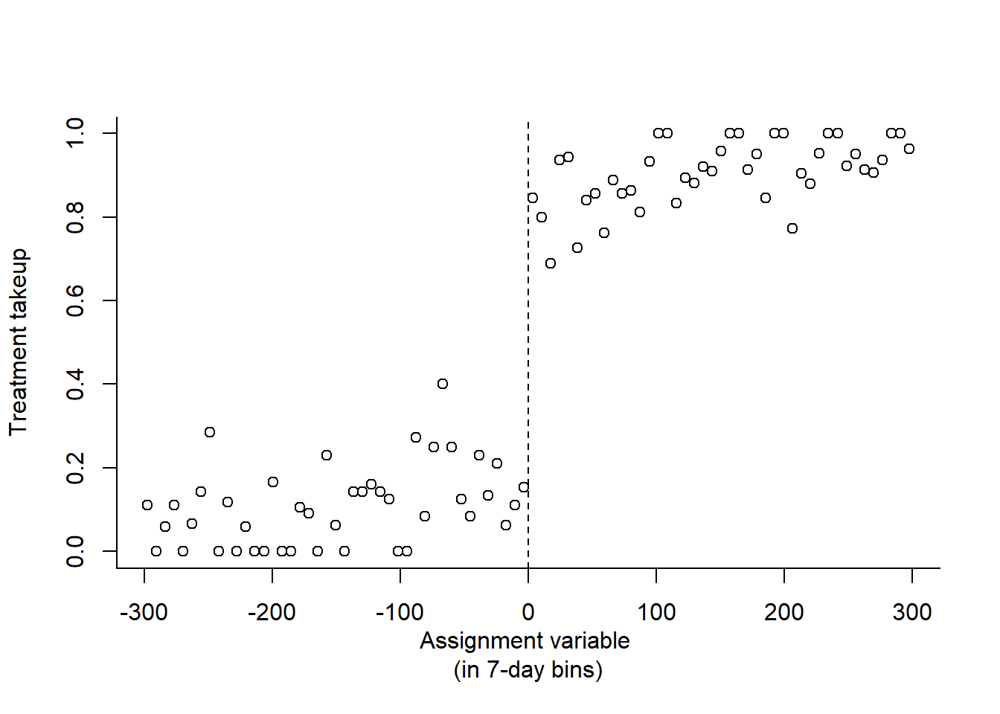
Here’s the plot with the 14-day binned assignment variable:
par(bty = "l")
plot(colnames(ptab14), prop.table(ptab14, 2)[2, ],
main = NULL,
ylab = "Treatment takeup",
xlab = "Assignment variable \n(in 14-day bins)" )
abline(v = 0, lty = 2)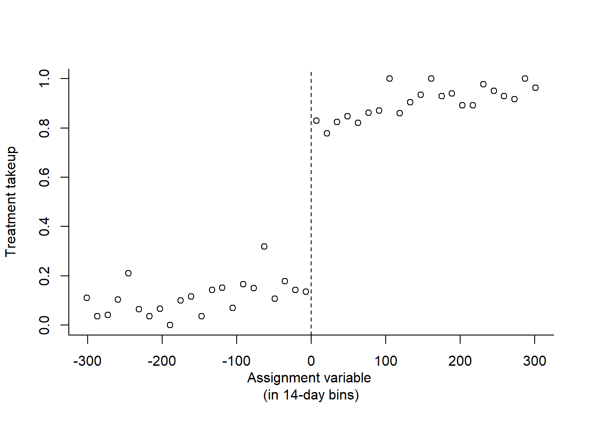
We can examine the trend of take-up across the 14-week bins. We can create a plot. First let’s estimate a linear probability model, which we can then use to get the regression lines in the plot. But first, let’s review something: Recall, from above, that the proportion of people assigned to treatment who actually took it up was .90, and that the proportion of kids assigned to the control who took it up was .11. Here’s a repeat of that code:
round( prop.table(comp, 1), 4)## takeup
## treatment 0 1
## 0 0.8856 0.1144
## 1 0.0983 0.9017We had used proportion tables (during our an earlier lecture) to get the denominator in the Wald estimate for LATE, \(p(D=1|Z=1) - p(D=1|Z=0)\). Here, \(p(D=1|Z=1) = 0.9017\) and \(p(D=1|Z=0) = 0.1144.\)40
prop.table(comp, 1)[2,2] - prop.table(comp, 1)[1,2]## [1] 0.7873352Remember, that we can also get that estimate using regression to predict takeup from treatment (our first stage in two-stage least squares):
summary(lm(takeup ~ treatment,
data = prek))##
## Call:
## lm(formula = takeup ~ treatment, data = prek)
##
## Residuals:
## Min 1Q Median 3Q Max
## -0.90171 -0.11438 0.09829 0.09829 0.88562
##
## Coefficients:
## Estimate Std. Error t value Pr(>|t|)
## (Intercept) 0.11438 0.01239 9.231 <2e-16 ***
## treatment 0.78734 0.01615 48.741 <2e-16 ***
## ---
## Signif. codes: 0 '***' 0.001 '**' 0.01 '*' 0.05 '.' 0.1 ' ' 1
##
## Residual standard error: 0.3065 on 1485 degrees of freedom
## Multiple R-squared: 0.6154, Adjusted R-squared: 0.6151
## F-statistic: 2376 on 1 and 1485 DF, p-value: < 2.2e-16We can use a similar linear probability model to estimate the proportion of treatment taken up while also considering the shape of take-up across the assignment variable. Let’s fit a cubic model.
summary(out.lm <- lm(takeup ~ treatment*(avar + I(avar^2) + I(avar^3)), data = prek))##
## Call:
## lm(formula = takeup ~ treatment * (avar + I(avar^2) + I(avar^3)),
## data = prek)
##
## Residuals:
## Min 1Q Median 3Q Max
## -0.95055 -0.10441 0.05641 0.08948 0.94131
##
## Coefficients:
## Estimate Std. Error t value Pr(>|t|)
## (Intercept) 1.398e-01 5.157e-02 2.711 0.00679 **
## treatment 6.358e-01 6.463e-02 9.837 < 2e-16 ***
## avar -1.129e-03 1.440e-03 -0.784 0.43336
## I(avar^2) -1.403e-05 1.108e-05 -1.266 0.20561
## I(avar^3) -3.301e-08 2.418e-08 -1.365 0.17235
## treatment:avar 2.905e-03 1.844e-03 1.575 0.11550
## treatment:I(avar^2) 7.280e-06 1.428e-05 0.510 0.61037
## treatment:I(avar^3) 4.228e-08 3.129e-08 1.351 0.17694
## ---
## Signif. codes: 0 '***' 0.001 '**' 0.01 '*' 0.05 '.' 0.1 ' ' 1
##
## Residual standard error: 0.3039 on 1479 degrees of freedom
## Multiple R-squared: 0.6235, Adjusted R-squared: 0.6217
## F-statistic: 349.9 on 7 and 1479 DF, p-value: < 2.2e-16Note: We don’t care about the p-values, nor do we need to include a logistic or probit link (e.g., a logistic regression).
This 63.58% is the discontinuity in take-up. In a sharp RDD, it would be 100% just like the plot between assignment variable and treatment assignment. Let’s use that model to now plot prediction lines in the plot:
par(bty = "l")
plot(jitter(prek$takeup, .05) ~ prek$avar,
cex = .5,
main = "Treatment receipt",
ylab = "Treatment takeup",
xlab = "Assignment variable" )
abline(v = 0, lty = 2)Let’s plot the points, from the 14-day bins, which is more stable than the daily bins.
For this, we run the following line after the plot we just created:
points(colnames(ptab14), prop.table(ptab14, 2)[2, ], pch = 16, col = "blue") 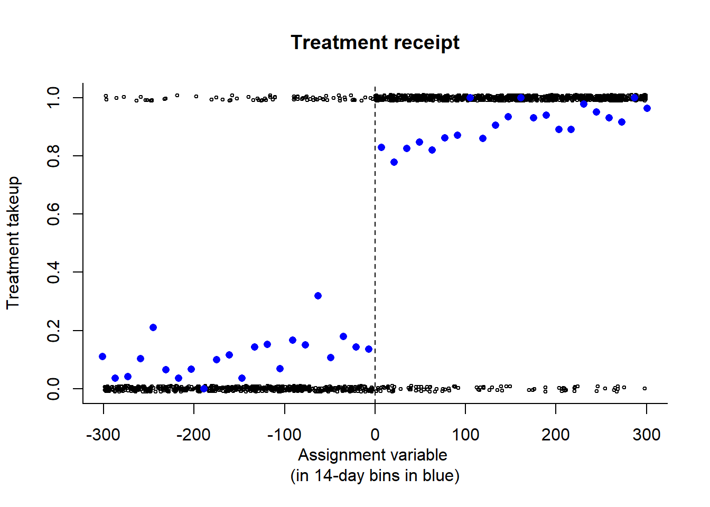
Let’s add predictor lines to the plot. For this, we can use the predict() function with the model we just created, out.lm and a data frame of prototypical data.
For this prototypical data frame, we can use all possible dates in the assignment variable, from 299 days below the cutoff to 299 days above (i.e., the minimum and maximum of our assignment variable). This will be our X axis for the prediction:
pre.x <- min(prek$avar):max(prek$avar) Next, let’s create a vector of treatment variables (0,1) for the prediction. Here, we are replicating the control group dummy code 0 299 times, then replicating the 1 300 times (the +1 is because people born on the cutoff day are 0 days away from the cutoff and they’re in the treatment):
pre.t <- rep(0:1, times = c(-min(prek$avar), max(prek$avar) + 1))Let’s create our prototypical data set for the prediction lines.
mydat <- data.frame(treatment = pre.t, avar = pre.x)Let’s now use the predict() function to predict their Y axis values:
pre.y <- predict(out.lm, newdata = mydat)Now, we can add that to our plot using this line:
lines(pre.y ~ pre.x, col = 'blue')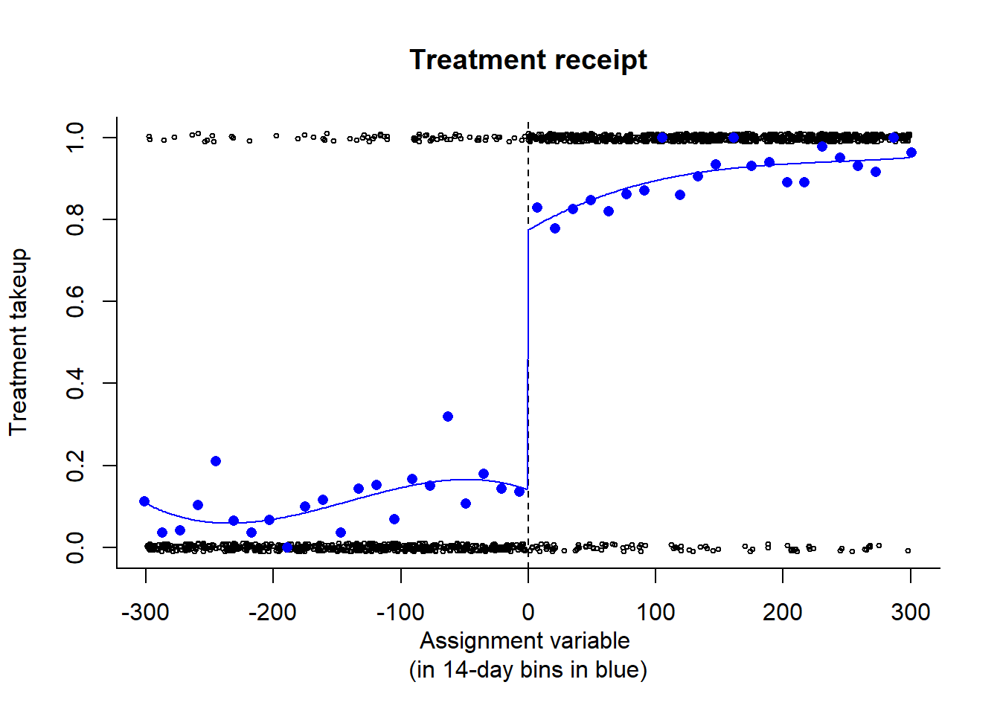
This illustrates that there is a discontinuity in the take-up (suggesting an effect), but that it is fuzzy, which is not so good, but the fuzziness is not terrible). We’ll continue for now with a sharp regression-discontinuity analysis. The fuzzy analysis applies instrumental variable estimation, which you may have guessed given that we took a peek at the Wald estimate.
7.4 Examining Assumptions
One of the more difficult steps in carrying out quasi-experimental designs is arguing against plausible alternative explanations for the effect. This is central to the validity of our claims about causality. To help us argue against these alternative explanations, we think about assumptions and garner evidence that these assumptions have been met. There are three assumptions we can address before we conduct our main analysis:
- There is no sorting around the cutoff (the continuity assumption).
- There are no discontinuities in the covariates.
- There are no unintended discontinuities in the outcome (placebo tests).
7.4.1 Assumption 1—the continuity assumption
This assumption is that the potential outcomes are continuous on both sides of the cutoff. If there is manipulation of the treatment-group classification, we can no longer claim that two groups on either side of the cutoff are equal in expectation, which means that any effect we observe on the outcome in our RDD test (yet to be performed) can be conflated with unobserved covariates that are related to the manipulation.
Let’s start by plotting a histogram of the assignment variable:
par(bty = "l")
hist(prek$avar)
abline(v = 0, col = 'blue', lwd = 2)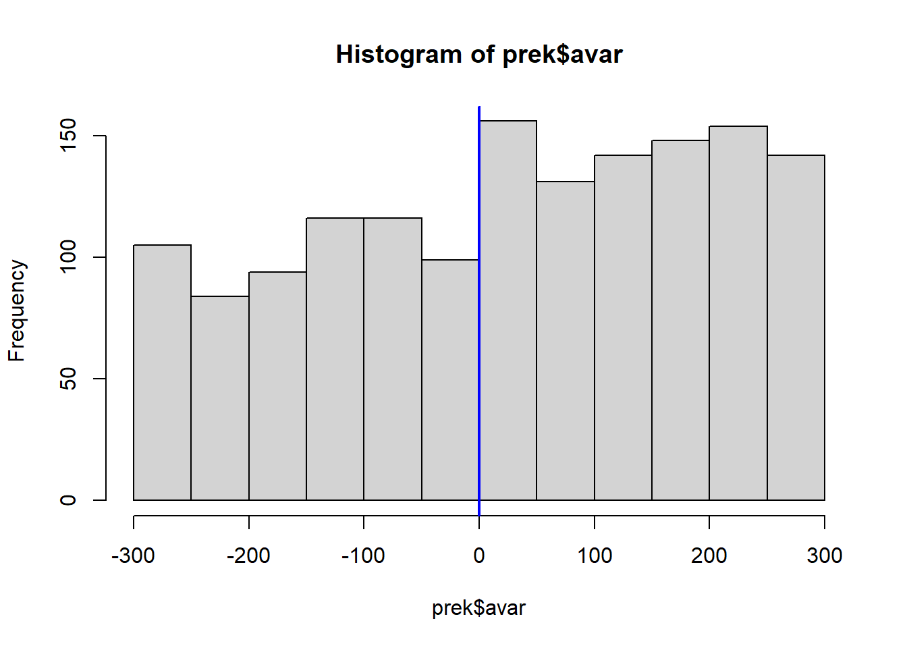
Ideally, we’d want the same frequency on both sides of the cut, especially near the cut. Still, even with equal frequencies, this does not confirm that there is no manipulation because there might be wash out among covariates that explain manipulation. So, this is why it is important to also examine the discontinuities in the covariates (in a later assumption). Notice that here, there appears to be a difference between the two sides of the cut. This could be because the birth rates are this way, but it might be because parents are manipulating their kids’ reported birthdays to get them into or out of the school. Some parents might think their kids are not ready, and delay them. Others might think their kids are ready even though they’re too young, and find a way to get into the treatment. We don’t know the mechanisms of this self sorting. Some families with young kids (who would have to wait a year) might move to a different district where the cut off date permits them to enter. These undetected crossovers might then enter the study on the right-hand side of the cut.
Let’s look at different bin widths in the histogram:
with(prek, hist(avar, breaks = seq(min(avar)-9, max(avar)+9, 28), right = FALSE))
abline(v = 0, col = 'blue', lwd = 2)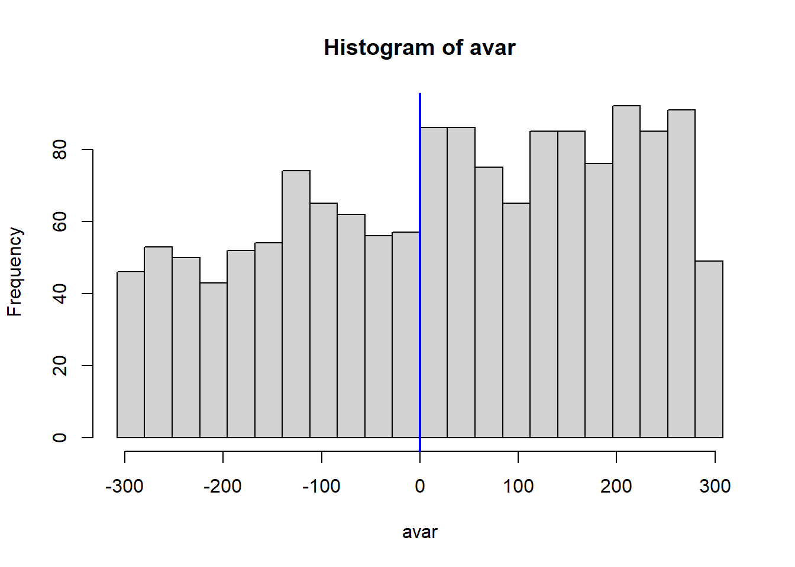
with(prek, hist(avar, breaks = seq(min(avar)-9, max(avar)+9, 14), right = FALSE))
abline(v = 0, col = 'blue', lwd = 2)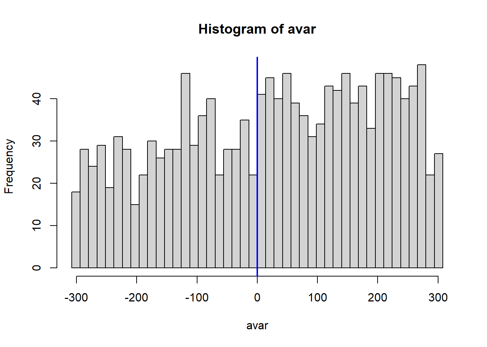
When we do this, we have make sure that the bins are split at the cutoff 0 and that they contain all observations. Also note the bins need to be set up so that 0 belongs to the treated group. For instance, make sure the 0 is on the left side of that first treatment bin. In the code above, the
breaks =argument sets the histogram bin width. Within that, theseq()argument creates a sequence of numbers from the start to the end and by how many numbers within each bin,seq(from =, to =, by =). The range was -308 and +308:
min(prek$avar)-9 # The youngest is-299, in number of days away from the cut of 0## [1] -308max(prek$avar)+9 # The oldest was +299 days above the cut## [1] 308seq(min(prek$avar)-9, max(prek$avar)+9, 28) # 28 days is our bin width## [1] -308 -280 -252 -224 -196 -168 -140 -112 -84 -56 -28 0 28 56 84
## [16] 112 140 168 196 224 252 280 308So, the breaks are set so that the first one in the treatment starts at 0. The
right = FALSEargument tells R to make the breaks open on the right, and therefore closed on the left (we did this to make sure 0 is on the left side of the bin in that first treatment bin next to the intercept).
These histograms suggest there are differences. We can actually conduct a statistical test to determine whether this sorting is strong enough to be deemed unlikely in the null condition that such sorting is not a feature of the population. For this, we’ll use the McCrary test from the rdd package. We can view the help files using ?rdd::DCdensity.
7.4.1.1 McCrary test
We use the McCrary sorting test to detect discontinuities in the forcing variable.
library(rdd)
DCdensity(prek$avar, 0, ext.out = TRUE)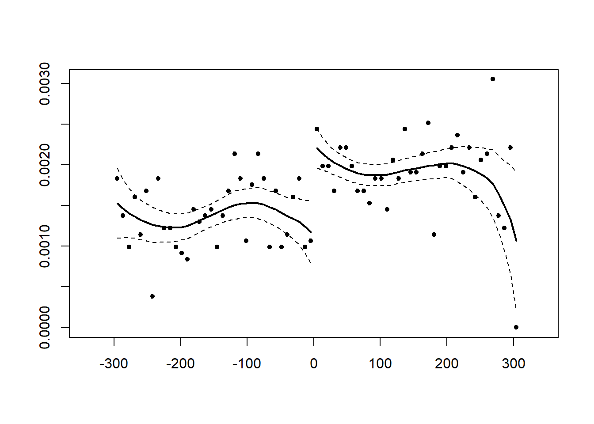
## $theta
## [1] 0.6725103
##
## $se
## [1] 0.2057787
##
## $z
## [1] 3.268124
##
## $p
## [1] 0.001082631
##
## $binsize
## [1] 8.819809
##
## $bw
## [1] 100.7021
##
## $cutpoint
## [1] 0
##
## $data
## cellmp cellval
## 1 -295.463611 0.0018299578
## 2 -286.643802 0.0013724684
## 3 -277.823992 0.0009912272
## 4 -269.004183 0.0016012131
## 5 -260.184374 0.0011437236
## 6 -251.364565 0.0016774613
## 7 -242.544755 0.0003812412
## 8 -233.724946 0.0018299578
## 9 -224.905137 0.0012199719
## 10 -216.085327 0.0012199719
## 11 -207.265518 0.0009912272
## 12 -198.445709 0.0009149789
## 13 -189.625900 0.0008387307
## 14 -180.806090 0.0014487166
## 15 -171.986281 0.0012962201
## 16 -163.166472 0.0013724684
## 17 -154.346662 0.0014487166
## 18 -145.526853 0.0009912272
## 19 -136.707044 0.0013724684
## 20 -127.887235 0.0016774613
## 21 -119.067425 0.0021349508
## 22 -110.247616 0.0018299578
## 23 -101.427807 0.0010674754
## 24 -92.607997 0.0017537096
## 25 -83.788188 0.0021349508
## 26 -74.968379 0.0018299578
## 27 -66.148570 0.0009912272
## 28 -57.328760 0.0016774613
## 29 -48.508951 0.0009912272
## 30 -39.689142 0.0011437236
## 31 -30.869332 0.0016012131
## 32 -22.049523 0.0018299578
## 33 -13.229714 0.0009912272
## 34 -4.409905 0.0010674754
## 35 4.409905 0.0024399438
## 36 13.229714 0.0019824543
## 37 22.049523 0.0019824543
## 38 30.869332 0.0016774613
## 39 39.689142 0.0022111990
## 40 48.508951 0.0022111990
## 41 57.328760 0.0019824543
## 42 66.148570 0.0016774613
## 43 74.968379 0.0016774613
## 44 83.788188 0.0015249648
## 45 92.607997 0.0018299578
## 46 101.427807 0.0018299578
## 47 110.247616 0.0014487166
## 48 119.067425 0.0020587025
## 49 127.887235 0.0018299578
## 50 136.707044 0.0024399438
## 51 145.526853 0.0019062061
## 52 154.346662 0.0019062061
## 53 163.166472 0.0021349508
## 54 171.986281 0.0025161920
## 55 180.806090 0.0011437236
## 56 189.625900 0.0019824543
## 57 198.445709 0.0019824543
## 58 207.265518 0.0022111990
## 59 216.085327 0.0023636955
## 60 224.905137 0.0019062061
## 61 233.724946 0.0022111990
## 62 242.544755 0.0016012131
## 63 251.364565 0.0020587025
## 64 260.184374 0.0021349508
## 65 269.004183 0.0030499297
## 66 277.823992 0.0013724684
## 67 286.643802 0.0012199719
## 68 295.463611 0.0022111990
## 69 304.283420 0.0000000000The cut point is zero, the ext.out = TRUE prints out the z-statistic and p-value (at the top of the output). Notice that the z = 3.27, p = .001, indicating a violation of this assumption. The plot also shows the discontinuity in expected frequency (we don’t want this). It automatically estimates bin (so, it doesn’t use the bin widths of 7 or 14 days that the authors had considered; it used 8.82 in this example). We can specify the bin width, here of 7 units in the assignment variable:
DCdensity(prek$avar, 0, bin = 7, ext.out = TRUE) 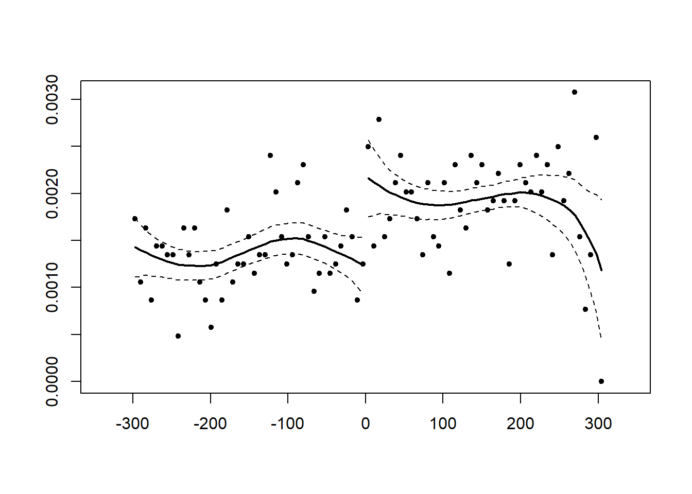
## $theta
## [1] 0.5801444
##
## $se
## [1] 0.1977764
##
## $z
## [1] 2.933335
##
## $p
## [1] 0.003353422
##
## $binsize
## [1] 7
##
## $bw
## [1] 105.4405
##
## $cutpoint
## [1] 0
##
## $data
## cellmp cellval
## 1 -297.5 0.0017292727
## 2 -290.5 0.0010567778
## 3 -283.5 0.0016332020
## 4 -276.5 0.0008646364
## 5 -269.5 0.0014410606
## 6 -262.5 0.0014410606
## 7 -255.5 0.0013449899
## 8 -248.5 0.0013449899
## 9 -241.5 0.0004803535
## 10 -234.5 0.0016332020
## 11 -227.5 0.0013449899
## 12 -220.5 0.0016332020
## 13 -213.5 0.0010567778
## 14 -206.5 0.0008646364
## 15 -199.5 0.0005764242
## 16 -192.5 0.0012489192
## 17 -185.5 0.0008646364
## 18 -178.5 0.0018253435
## 19 -171.5 0.0010567778
## 20 -164.5 0.0012489192
## 21 -157.5 0.0012489192
## 22 -150.5 0.0015371313
## 23 -143.5 0.0011528485
## 24 -136.5 0.0013449899
## 25 -129.5 0.0013449899
## 26 -122.5 0.0024017677
## 27 -115.5 0.0020174849
## 28 -108.5 0.0015371313
## 29 -101.5 0.0012489192
## 30 -94.5 0.0013449899
## 31 -87.5 0.0021135556
## 32 -80.5 0.0023056970
## 33 -73.5 0.0015371313
## 34 -66.5 0.0009607071
## 35 -59.5 0.0011528485
## 36 -52.5 0.0015371313
## 37 -45.5 0.0011528485
## 38 -38.5 0.0012489192
## 39 -31.5 0.0014410606
## 40 -24.5 0.0018253435
## 41 -17.5 0.0015371313
## 42 -10.5 0.0008646364
## 43 -3.5 0.0012489192
## 44 3.5 0.0024978384
## 45 10.5 0.0014410606
## 46 17.5 0.0027860505
## 47 24.5 0.0015371313
## 48 31.5 0.0017292727
## 49 38.5 0.0021135556
## 50 45.5 0.0024017677
## 51 52.5 0.0020174849
## 52 59.5 0.0020174849
## 53 66.5 0.0017292727
## 54 73.5 0.0013449899
## 55 80.5 0.0021135556
## 56 87.5 0.0015371313
## 57 94.5 0.0014410606
## 58 101.5 0.0021135556
## 59 108.5 0.0011528485
## 60 115.5 0.0023056970
## 61 122.5 0.0018253435
## 62 129.5 0.0016332020
## 63 136.5 0.0024017677
## 64 143.5 0.0021135556
## 65 150.5 0.0023056970
## 66 157.5 0.0018253435
## 67 164.5 0.0019214142
## 68 171.5 0.0022096263
## 69 178.5 0.0019214142
## 70 185.5 0.0012489192
## 71 192.5 0.0019214142
## 72 199.5 0.0023056970
## 73 206.5 0.0021135556
## 74 213.5 0.0020174849
## 75 220.5 0.0024017677
## 76 227.5 0.0020174849
## 77 234.5 0.0023056970
## 78 241.5 0.0013449899
## 79 248.5 0.0024978384
## 80 255.5 0.0019214142
## 81 262.5 0.0022096263
## 82 269.5 0.0030742627
## 83 276.5 0.0015371313
## 84 283.5 0.0007685657
## 85 290.5 0.0013449899
## 86 297.5 0.0025939091
## 87 304.5 0.0000000000Now, the z-statistic is 2.93, p = .003. So, there’s a problem at our preferred bin width, too.
The McCrary test is well known. There are other methods, too. The rddensity package provides a test of this assumption, using the rddensity() function, with the centered assignment variable as the only argument.
library(rddensity)
denout <- rddensity(prek$avar, massPoints = FALSE)
summary(denout)##
## Manipulation testing using local polynomial density estimation.
##
## Number of obs = 1487
## Model = unrestricted
## Kernel = triangular
## BW method = estimated
## VCE method = jackknife
##
## c = 0 Left of c Right of c
## Number of obs 612 875
## Eff. Number of obs 144 289
## Order est. (p) 2 2
## Order bias (q) 3 3
## BW est. (h) 74.158 100.676
##
## Method T P > |T|
## Robust 1.4475 0.1477
##
##
## P-values of binomial tests (H0: p=0.5).
##
## Window Length / 2 <c >=c P>|T|
## 3.000 4 19 0.0026
## 6.000 11 26 0.0201
## 9.000 15 34 0.0094
## 12.000 19 41 0.0062
## 15.000 23 51 0.0015
## 18.000 32 59 0.0061
## 21.000 38 74 0.0009
## 24.000 44 79 0.0020
## 27.000 54 86 0.0086
## 30.000 59 95 0.0046The various bin widths are all consistent in rejecting the null hypothesis that there is continuity in the assignment variable. With this, we have evidence that is consistent with the McCrary test that the continuity assumption has not been met.
If we consider the context of the study, it seems plausible that self-sorting does exist. Some people with higher financial means tend to make the best decisions for their children and these families’ children are also likely higher in achievement than their counterparts. The failure to meet this assumption suggests that minimally, we need to present our results with caution.
7.4.2 Assumption 2—Discontinuities in the covariates
If this test is successful, it provides (partial) evidence that the discontinuity in our outcome (estimated subsequent to these tests) is not explained by some other mechanism. This is another way to consider manipulation and sorting. If people can sort into one or the other side of the cutpoint, we no longer have a potential outcomes framework. If sorting has occurred, it might be due to unobserved or observed covariates. The best we can do is examine the covariates we have available to identify whether there are discontinuities at our assignment variable cutoff that we use for the main analysis. If we find that any covariates or pseudo-outcomes that are expected to strongly correlate with our outcome variable are discontinuous at the cutoff, we cannot trust the estimate of the treatment’s effect on the outcome.
Our covariates are female, r_black, r_hispanic, r_white, fl_yes, hl_english, and hl_spanish. Let’s create an object that includes all of our covariate variable names.
mycovs <- c("female", "r_black", "r_hispanic", "r_white", "fl_yes", "hl_english", "hl_spanish")Here’s a custom function that plots the scatter plot, binned data, and polynomial regression curve. Our goal is to plot the covariates by the assignment variable to see if there is a discontinuity. Let’s call our function discont().
In the code in our function, we have four arguments: y represents the covariate. It is the outcome variable in the test. av is the assignment variable. trt is the treatment indicator, binw is the bin width, main is there in case we want to add a title tot he plot; the default, with main = NULL, is to not have a title.
discont <- function(y, av, trt, binw, main = NULL){
avbin <- floor(av/binw)*binw + binw/2 # create bin mid-points
mbin <- tapply(y, avbin, mean) # covariate means of each bin (tapply is similar to the by() function)
# fit the polynomial regression:
out.lm <- lm(y ~ trt*(av + I(av^2) + I(av^3)))
# plot the data :
plot(av, y, ylab = main, cex.lab=1.5, pch = '.') # scatterplot, specifying the x and y axis range
abline(v = 0, lty = 2)
points(names(mbin), mbin, pch=20) #adding the observed points
# getting the predicted values from the estimate linear probability model (as above)
pre.x <- min(av):max(av)
pre.t <- rep(0:1, c(-min(av), max(av)+1))
pre.y <- predict(out.lm, data.frame(trt = pre.t, av = pre.x)) # predicted values
lines(pre.x, pre.y, col = 'blue', lwd = 2) # plot regression curve
print(c(main, round(coef(summary(out.lm))['trt', ], 4)), quote = FALSE)
}par(bty = "l")
with(prek, discont(y=female, av=avar,trt=treatment, binw=14, "female")) 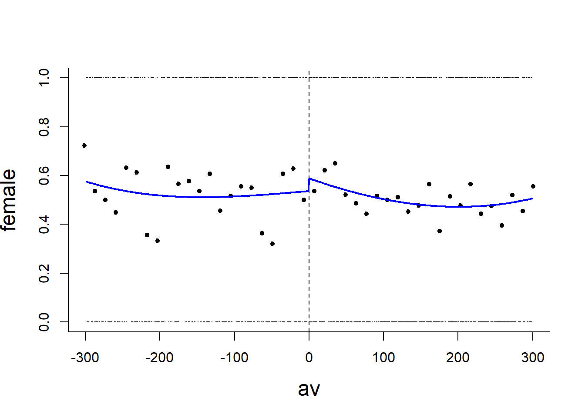
## Estimate Std. Error t value Pr(>|t|)
## female 0.0521 0.1064 0.4893 0.6247We can see that the discontinuity is pretty small compared to the variability. Here are the other covariates:
par(bty = "l")
with(prek, discont(y=r_black, av=avar,trt=treatment, binw=14, "Race ID as Black")) 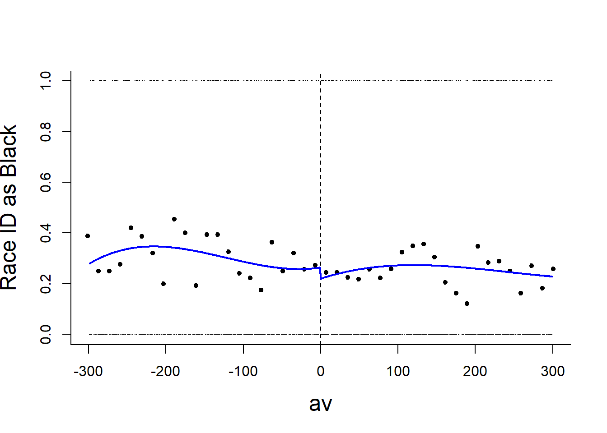
## Estimate Std. Error t value
## Race ID as Black -0.0439 0.0949 -0.4631
## Pr(>|t|)
## 0.6434with(prek, discont(y=r_hispanic,av=avar,trt=treatment, binw=14, "Race ID as Hispanic")) 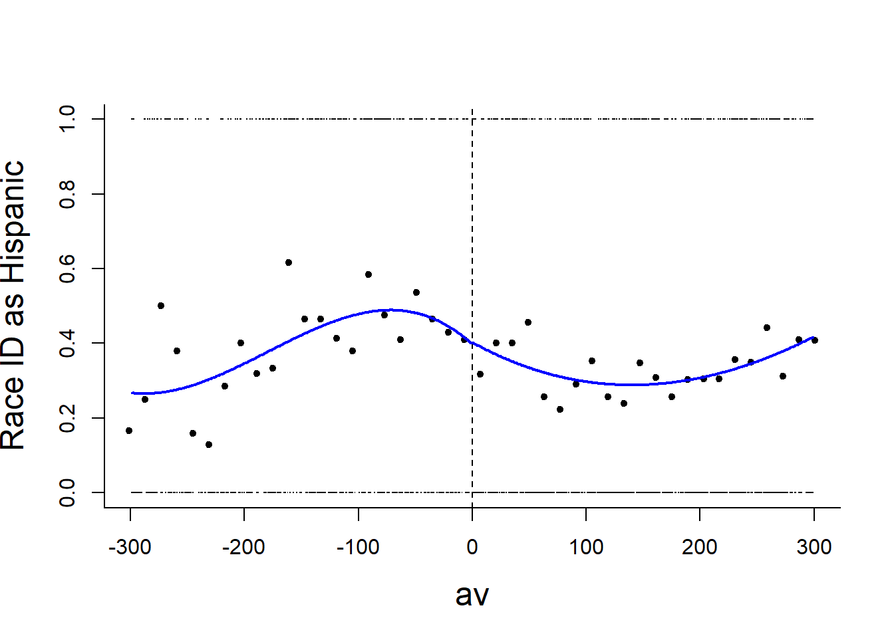
## Estimate Std. Error t value
## Race ID as Hispanic 0.0045 0.1012 0.0442
## Pr(>|t|)
## 0.9648with(prek, discont(y=r_white, av=avar,trt=treatment, binw=14, "Race ID as White"))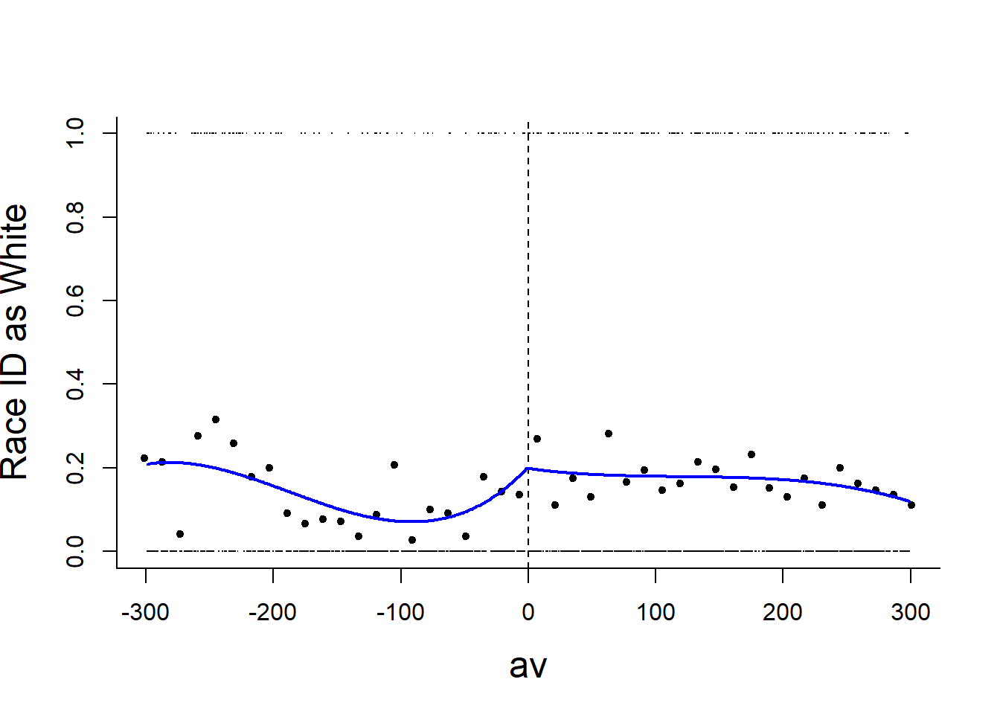
## Estimate Std. Error t value
## Race ID as White -0.0039 0.0768 -0.0511
## Pr(>|t|)
## 0.9593with(prek, discont(y=fl_yes, av=avar,trt=treatment, binw=14, "Free or Reduced Lunch")) 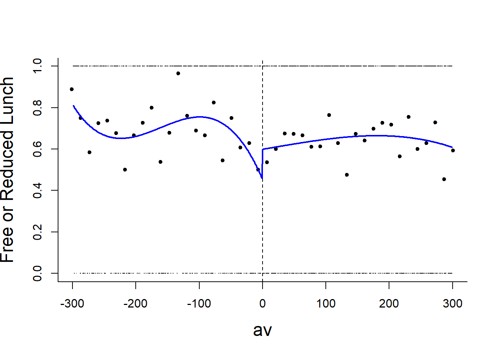
## Estimate Std. Error
## Free or Reduced Lunch 0.146 0.1001
## t value Pr(>|t|)
## 1.4584 0.1449with(prek, discont(y=hl_english,av=avar,trt=treatment, binw=14, "Home language is English")) 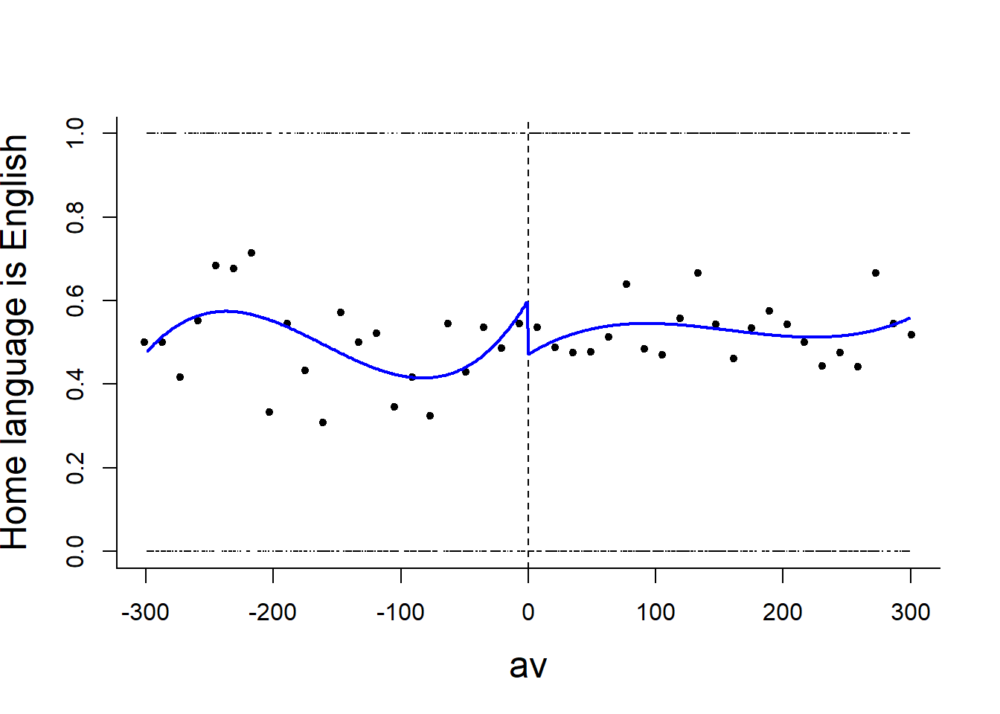
## Estimate Std. Error
## Home language is English -0.13 0.1062
## t value Pr(>|t|)
## -1.224 0.2211with(prek, discont(y=hl_spanish,av=avar,trt=treatment, binw=14, "Home language is Spanish"))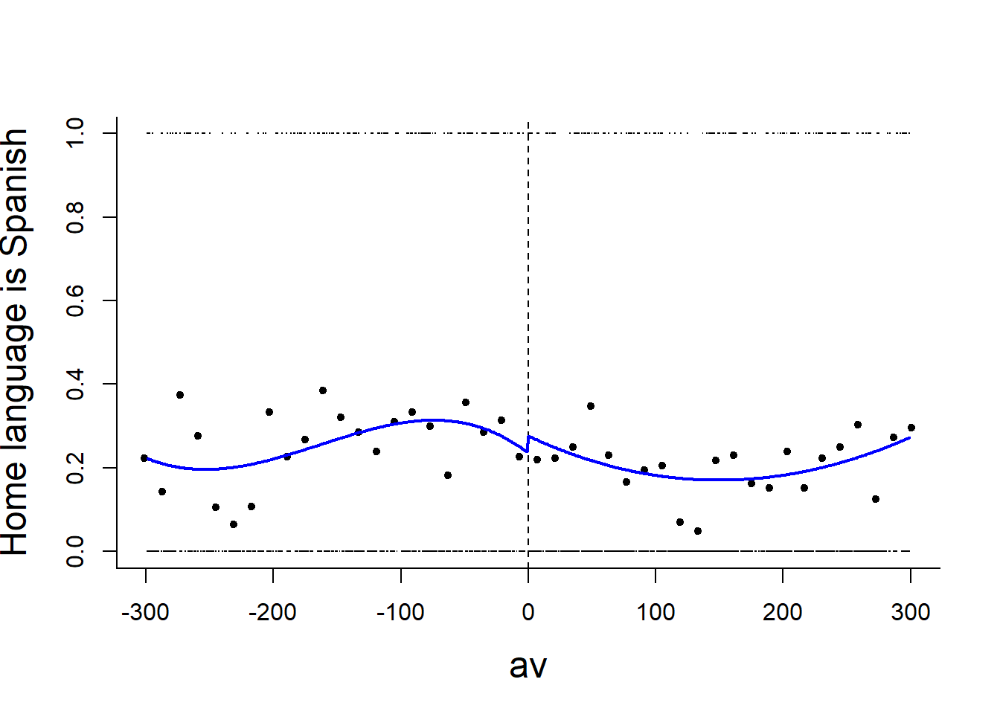
## Estimate Std. Error
## Home language is Spanish 0.0404 0.0889
## t value Pr(>|t|)
## 0.454 0.6499Notice that the Free-lunch and Home-language-is-English variables appear to have some discontinuity at the cutoff location. We should more closely examine these. Let’s use the rdrobust package to estimate their effects using a local polynomial: The rdrobust() function creates an object that we can then examine using summary() approach (non-parametric). The first argument is the outcome of interest (free lunch, in this case). The next is the assignment variable and the cut:
library(rdrobust)
out <- rdrobust(prek$fl_yes,
prek$avar, masspoints = "off",
c = 0)
summary(out)## Call: rdrobust
##
## Number of Obs. 1487
## BW type mserd
## Kernel Triangular
## VCE method NN
##
## Number of Obs. 612 875
## Eff. Number of Obs. 223 300
## Order est. (p) 1 1
## Order bias (q) 2 2
## BW est. (h) 104.176 104.176
## BW bias (b) 158.345 158.345
## rho (h/b) 0.658 0.658
##
## =============================================================================
## Method Coef. Std. Err. z P>|z| [ 95% C.I. ]
## =============================================================================
## Conventional 0.040 0.103 0.393 0.695 [-0.161 , 0.242]
## Robust - - 0.298 0.766 [-0.207 , 0.282]
## =============================================================================The summary suggests that the discontinuity is not statistically significant (z = 0.393, p > .05). We can use rdrobust’s plotting function, with the same specifications from this effect estimation, from the rdrobust object. We can put the following three specifications from the out object we just created and put them into the plot function’s arguments:
The out$kernel is the non-parametric kernel used to estimate bin’s mean for comparing treatment groups.
out$kernel## [1] "Triangular"The out$bws["h",] is the length of the bin on left (l) and right (r) that was optimally estimated by rdrobust. The default is that both sides are equal.
out$bws["h",]## left right
## 104.1759 104.1759out$p is the polynomial that was used in the rdrobust() function. Usually linear (i.e., p = 1) is fine.
out$p## [1] 1rdplot(prek$fl_yes,
prek$avar, masspoints = "off",
y.lab ="Free or Reduced Lunch",
x.lab ="Assignment variable",
c = 0,
ci = 95,
kernel= tolower(out$kernel),
h = out$bws["h", ],
p = out$p)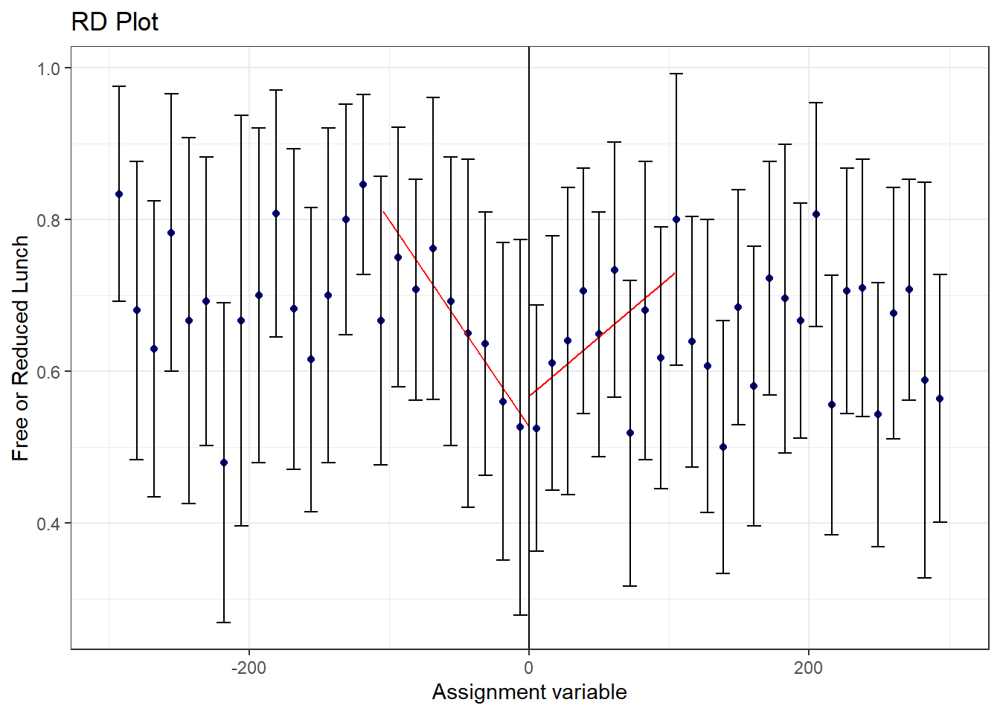
Notice that within this local linear window, the discontinuity looks very different from what we saw with the parametric version with all points on the assignment variable. Here’s that previous plot:
with(prek, discont(y = fl_yes, av = avar,
trt = treatment,
binw = 14,
"Free or Reduced Lunch")) 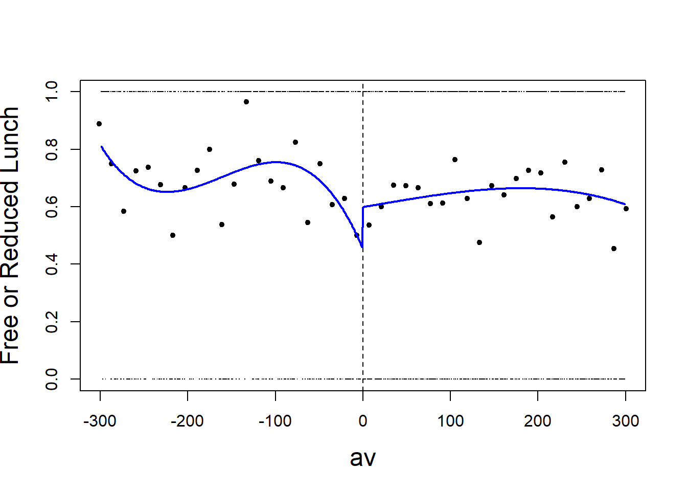
## Estimate Std. Error
## Free or Reduced Lunch 0.146 0.1001
## t value Pr(>|t|)
## 1.4584 0.1449Let’s examine the Home-language-is-English covariate discontinuity
out <- rdrobust(prek$hl_english,
prek$avar, masspoints = "off",
c = 0)
summary(out)## Call: rdrobust
##
## Number of Obs. 1487
## BW type mserd
## Kernel Triangular
## VCE method NN
##
## Number of Obs. 612 875
## Eff. Number of Obs. 202 273
## Order est. (p) 1 1
## Order bias (q) 2 2
## BW est. (h) 94.474 94.474
## BW bias (b) 150.990 150.990
## rho (h/b) 0.626 0.626
##
## =============================================================================
## Method Coef. Std. Err. z P>|z| [ 95% C.I. ]
## =============================================================================
## Conventional -0.052 0.104 -0.497 0.619 [-0.254 , 0.151]
## Robust - - -0.600 0.548 [-0.315 , 0.167]
## =============================================================================The summary suggests that the discontinuity is not statistically significant (z = -0.497, p > .05).
rdplot(prek$hl_english,
prek$avar, masspoints = "off",
y.lab ="Home lang. is English",x.lab ="Assignment variable",
c = 0,
ci = 95,
kernel= tolower(out$kernel),
h = out$bws["h", ],
p = out$p) 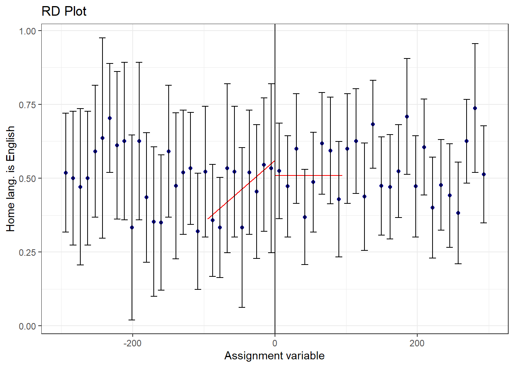
Within this local linear window, the discontinuity looks present, but we can also see very broad bands of error around the points on the assignment variable. For comparison, here’s the overfitted plot we did earlier:
with(prek, discont(y=hl_english, av=avar,trt=treatment, binw=14, "Home lang. is English")) 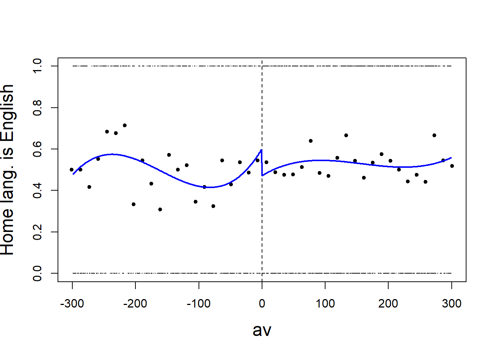
## Estimate Std. Error
## Home lang. is English -0.13 0.1062
## t value Pr(>|t|)
## -1.224 0.2211Neither of these two covariate’s discontinuity was significant, so we do not have evidence that there is a threat to the validity of our ultimate estimates of interest (on the outcomes) that is explained by these covariates.
We should examine every possible covariate in the same way we did with these two.
If our plots and our tests show no discontinuities in any of the covariates, we have a stronger argument against the threat that there is self sorting; however, we have to remember that this is only related to the covariates we were able to measure. So far, based on this absense of evidence, we can say that we are in good shape good shape because there are neglible discontinuities.
Besides covariates, we might also examine “pseudo-outcomes” as Murnane & Willett (p. 192) describe them. These are variables that also potentially explain the discontinuity we hope to examine. For instance, if there were another program being implemented with the same assignment variable, we should be concerned and we should test whether that treatment is discontinuous at our cutpoint. We do not have any in this particular data set, but the procedure is the same.
7.4.3 Assumption 3—Checking for pseudo-cut-offs in the outcome
What Murnane & Willett (p. 192) call pseudo-cut-offs are also sometimes called placebos. We are conducting “placebo tests” in this assumption. We can think of this as a concern about whether there are any discontinuities in the outcome variable at other regions of the assignment variable. If there are, the chance of an alternative explanation for our causal claim of interest is higher. In other words, how can we be certain that the one corresponding with our causal effect is not just another case of discontinuity that regularly occurs?
In the rddtools package, we can use the plotPlacebo() function.
Notice that now our y is the outcome variable (ppvt). The rddtools package requires that we create an rdd_data output object.
library(rddtools)
dat_prek <- rdd_data(y = ppvt, x = avar,
data = prek,
cutpoint = 0 )After we have that object, dat_pre, we can use it in other functions with this package. Let’s specify the model as being overfitted, using a quartic model (explained in the section below), which allows for lots of bends in the functional form.
plm_ppvt <- rdd_reg_lm(dat_prek, order = 4) #(Here, we are using a quartic model, with polynomial order = 4)Now we can examine the placebo test with this parametric model: This will take up to one minute to run. The from = and to = specify the range, in proportion of the assignment variable to analyze; so, if wanted to include the middle 50% of the assignment variable, we can specify from = .25, to = .75. What we are looking for is whether any of the error bars (the shaded regions) cross the horizontal line, which would indicate a discontinuity. The center point estimate, in blue, with the confidence interval is at the cutpoint, which is where we actually want a discontinuity (if we hope to find an effect due to treatment).
plotPlacebo(plm_ppvt,
same_bw = T,
from = .25, to = .75) 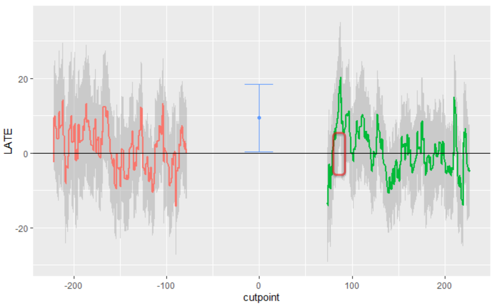
In this printout, we see an unexpected discontinuity in the region at about 85 days older than the cut-off point (the area I annotated with a red box). This indicates that—at least with this polynomial model—the assumption is not met.
7.4.3.1 Summary about RDD assumptions
In examining these assumptions, we are considering plausible alternative explanations for discontinuities that critics might bring up. Sorting or manipulation of peoples’ status on the assignment variable is tantamount to selection bias. Discontinuities in the covariates and fluctuations in discontinuities in the assignment variable can also indicate alternative explanations for the discontinuous effect that we are arguing is due to the question predictor of interest in our causal claim. With evidence that we have met these assumptions, we are making our claim about causality more convincing; we are strengthening our internal validity argument.
7.5 Examining the Parametric Functional Form
A good first step in considering functional form is viewing the plots from an over-fitting parametric (global) model. By overfitting, we mean that we fit a higher-order polynomial model. For instance, if we use a quartic model, being a fourth-order polynomial, it permits lots of bends in the relationship between the assignment variable and the outcome. \[Y_i = \beta_0 + \beta_{1}\text{D}_i + \beta_{2}\text{Z}_i + \beta_{3}\text{Z}_i^2 + \beta_{4}\text{Z}_i^3 + \beta_{5}\text{Z}_i^4 + \beta_{6}\text{D}_i\text{Z}_i + \beta_{7}\text{D}_i\text{Z}_i^2 + \beta_{8}\text{D}_i\text{Z}_i^3 + \beta_{9}\text{D}_i\text{Z}_i^4 + \epsilon_i\]
In this specification of the quartic model, \(\text{D}_i\) is the treatment status of unit i \(\text{(D} = 1\) for treatment and \(\text{D} = 0\) for control, serving as a switch to activate \(\beta_6\) through \(\beta_9\) to model the slope on the right side of the cut) and \(\text{Z}_i\) is the unit’s score on the forcing variable (the continuous variable, which is days away from the cut-off date in this data set).41
The default plot in rdrobust provides this quartic-model output:
library(rdrobust)
plot_out <- rdplot(prek$ppvt,
prek$avar, masspoints = "off",
y.lab ="PPVT",
x.lab ="Assignment variable",
c = 0,
ci = 95,
title = "Quartic")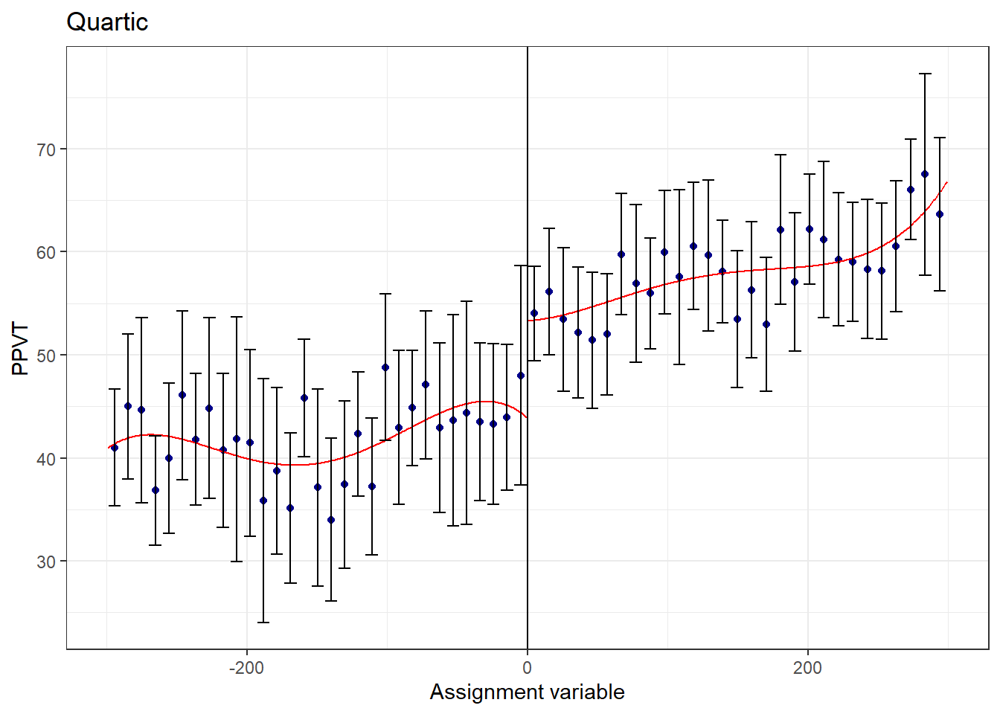
If this overfitted model showed a pattern, we could specify that in a parametric model. For instance, if the plot showed a straight line on each side instead of the wavy one we see, we might use a regular linear model to estimate the effect, such as
\[Y_i = \beta_0 + \beta_{1}\text{D}_i + \beta_{2}\text{Z}_i + \beta_{3}\text{D}_i\text{Z}_i + \epsilon_i \text{.}\] If the slopes appeared to be the same on each side, and we were investigating the effect only in terms of the intercept, we could use an even simpler model, \[Y_i = \beta_0 + \beta_{1}\text{D}_i + \beta_{2}\text{Z}_i + \epsilon_i \text{.}\]
If the relationship between the assignment variable and the outcome seems to change at a particular location, we might investigate substantive reasons for this based on what we know about the context and the theory. For instance, if the trend appeared to be quadratic at low or high regions of the assignment variable—away from our cut-off point—but linear in a good region around our cutoff point, we would ask why that is occurring. If we use this visual information in conjunction with our reasoning for what causes that secular trend to change at that point in the assignment variable, we can make a justification for the bandwidth of our analysis, and for our choice of parametric model within that bandwidth. With the present data, we still see some bendiness near the threshold. We might wonder, for example, why children about 150 to 180 days younger than the cut-off date seem to have lower vocabulary scores than those who are younger or older than them. We might see a different pattern with different bins. Notice, for instance, that at about 160 days younger, there is a point estimate that is higher than the regression line; if the bin width were larger, this would wash out the bend we see and we might think some kind of linear model (of the first order) would be appropriate. When we report these results, we should be sure to report which function and package we are using because the bin sizes from this function are calculated using an approach to minimize the error but also to reflect the variability in the full scatterplot42
The summary of the plot object displays the number of observations used, the order of the polynomial, in this case 4, the window (bandwidth) of analysis on the assignment variable (here, all points are included on both sides), the number of bins on both sides of the cut, and the average bin length \(\text{(}9.65\) on the left, \(10.31\) on the right).
summary(plot_out)## Call: rdplot
##
## Number of Obs. 1487
## Kernel Uniform
##
## Number of Obs. 612 875
## Eff. Number of Obs. 612 875
## Order poly. fit (p) 4 4
## BW poly. fit (h) 299.000 299.000
## Number of bins scale 1 1
##
## Bins Selected 31 29
## Average Bin Length 9.645 10.310
## Median Bin Length 9.645 10.310
##
## IMSE-optimal bins 5 6
## Mimicking Variance bins 31 29
##
## Relative to IMSE-optimal:
## Implied scale 6.200 4.833
## WIMSE variance weight 0.004 0.009
## WIMSE bias weight 0.996 0.991We can examine the estimated effect of this model. However, this over-fitted model is not the model that we should use to estimate effects; it provides a starting point. If we were to use a parametric approach to estimate effects, we could follow Shadish, Cook, and Campbell’s (2002) advice to drop non-significant terms from higher to lower-order terms, in the interest of statistical power, though they qualify this by advising us to keep terms when in doubt, to obtain less biased estimates of the effect.
The rdrobust package uses the rdrobust() function to estimate effects. In the following example, we’re using the same specifications from the plot output to mimic that model.43 Here, we’re specifying the kernel44, binwidth selection, the polynomial order (p = 4, here), and the analytic window of analysis (bandwidth, or h), which is the entire span of the assignment variable:
rdrb_out <- rdrobust(prek$ppvt,
prek$avar, masspoints = "off",
c = 0,
kernel= tolower(plot_out$kernel),
p = plot_out$p,
h = plot_out$h)
summary(rdrb_out)## Call: rdrobust
##
## Number of Obs. 1487
## BW type Manual
## Kernel Uniform
## VCE method NN
##
## Number of Obs. 612 875
## Eff. Number of Obs. 612 875
## Order est. (p) 4 4
## Order bias (q) 5 5
## BW est. (h) 299.000 299.000
## BW bias (b) 299.000 299.000
## rho (h/b) 1.000 1.000
##
## =============================================================================
## Method Coef. Std. Err. z P>|z| [ 95% C.I. ]
## =============================================================================
## Conventional 9.415 4.586 2.053 0.040 [0.426 , 18.404]
## Robust - - 1.696 0.090 [-1.522 , 21.078]
## =============================================================================To check that this approximates the parametric model, we can use the rddtools package which tests the significance of the parametric model. We get the same results as the previous model. We would not use these results, but we can have them available in case reviewers want to see them; some reviews expect us to show the functional form of the full parametric model as a starting point.
library(rddtools)
# Creating the rddtools object, first:
dat_prek <- rdd_data(y = ppvt, x = avar,
data = prek,
cutpoint = 0 )
# Now fitting the model:
plm_ppvt <- rddtools::rdd_reg_lm(dat_prek, order = 4)
summary(plm_ppvt)##
## Call:
## lm(formula = y ~ ., data = dat_step1, weights = weights)
##
## Residuals:
## Min 1Q Median 3Q Max
## -51.286 -11.817 -0.581 12.461 56.461
##
## Coefficients:
## Estimate Std. Error t value Pr(>|t|)
## (Intercept) 4.390e+01 3.736e+00 11.750 <2e-16 ***
## D 9.415e+00 4.580e+00 2.056 0.040 *
## x -1.164e-01 1.676e-01 -0.694 0.488
## `x^2` -2.502e-03 2.232e-03 -1.121 0.263
## `x^3` -1.344e-05 1.102e-05 -1.220 0.223
## `x^4` -2.168e-08 1.800e-08 -1.205 0.229
## x_right 1.238e-01 2.090e-01 0.592 0.554
## `x^2_right` 3.200e-03 2.807e-03 1.140 0.254
## `x^3_right` 8.189e-06 1.394e-05 0.587 0.557
## `x^4_right` 3.284e-08 2.290e-08 1.434 0.152
## ---
## Signif. codes: 0 '***' 0.001 '**' 0.01 '*' 0.05 '.' 0.1 ' ' 1
##
## Residual standard error: 16.98 on 1477 degrees of freedom
## Multiple R-squared: 0.195, Adjusted R-squared: 0.1901
## F-statistic: 39.76 on 9 and 1477 DF, p-value: < 2.2e-16In the output, the treatment variable is \(D\) and the forcing variable is \(X\)—note that in our specification equation, we had used \(Z\) as the symbol instead of \(X\). The parameters are in the order of our quartic model specification equation, however. Because the fourth-order polynomial parameters \(\text{(}\beta_5 \text{ & } \beta_9)\) are not significant, we could follow Shadish, Cook, and Campbell’s (2002) suggestion and estimate the cubic model; if the third order polynomials are not significant, we could remove them and examine the quadratic model, and so forth.
We can specify other functional forms of the plot. Let’s make it cubic (p = 3 for polynomial order of 3):
plot_out <- rdplot(prek$ppvt,
prek$avar, masspoints = "off",
y.lab ="PPVT",x.lab ="Assignment variable",
c = 0, # where the cut-point is
p = 3, # cubic
ci = 95,
title = "Cubic")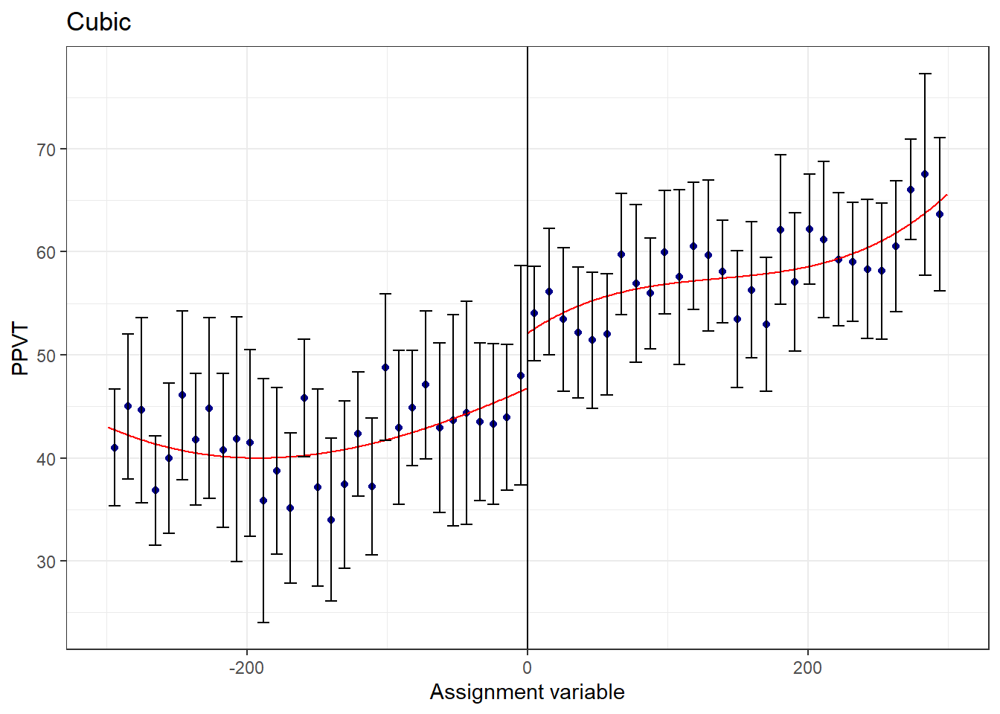
We can see that the left side of the cutoff looks more like a quadratic function even though we permitted a cubic functional form. The right side is slightly cubic, with a bend. A quadratic model will probably provide a more parsimonious and representative functional form, at least with this entire analytic sample. We can look at the parameter estimates and their standard errors to verify that the cubic model is overkill:
# Using the dat_prek rddtools object we had previously created, we fit a cubic model:
plm_ppvt3 <- rddtools::rdd_reg_lm(dat_prek, order = 3)
summary(plm_ppvt3)##
## Call:
## lm(formula = y ~ ., data = dat_step1, weights = weights)
##
## Residuals:
## Min 1Q Median 3Q Max
## -51.308 -11.923 -0.585 12.272 55.544
##
## Coefficients:
## Estimate Std. Error t value Pr(>|t|)
## (Intercept) 4.677e+01 2.881e+00 16.231 <2e-16 ***
## D 5.361e+00 3.611e+00 1.485 0.138
## x 6.081e-02 8.046e-02 0.756 0.450
## `x^2` 8.164e-05 6.190e-04 0.132 0.895
## `x^3` -2.658e-07 1.351e-06 -0.197 0.844
## x_right 3.076e-02 1.030e-01 0.299 0.765
## `x^2_right` -6.639e-04 7.981e-04 -0.832 0.406
## `x^3_right` 1.692e-06 1.748e-06 0.968 0.333
## ---
## Signif. codes: 0 '***' 0.001 '**' 0.01 '*' 0.05 '.' 0.1 ' ' 1
##
## Residual standard error: 16.98 on 1479 degrees of freedom
## Multiple R-squared: 0.1939, Adjusted R-squared: 0.1901
## F-statistic: 50.82 on 7 and 1479 DF, p-value: < 2.2e-16The cubic model uses a lot of parameters to explain something that seems to be a simpler functional form. Let’s make it quadratic (p = 2 for polynomial order of 2). This is what the authors (Wong et al., 2008) had used with their similar (more complete) set of data. Here’s the plot, with the p = 2 argument for the quadratic model:
plot_out <- rdplot(prek$ppvt,
prek$avar, masspoints = "off",
y.lab ="PPVT", x.lab ="Assignment variable",
c = 0,
p = 2, # quadratic
ci = 95,
title = "Quadratic") 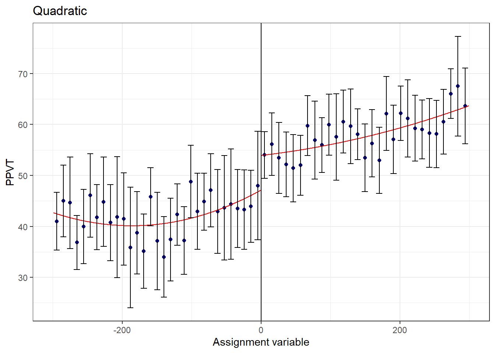
summary(plot_out)## Call: rdplot
##
## Number of Obs. 1487
## Kernel Uniform
##
## Number of Obs. 612 875
## Eff. Number of Obs. 612 875
## Order poly. fit (p) 2 2
## BW poly. fit (h) 299.000 299.000
## Number of bins scale 1 1
##
## Bins Selected 31 29
## Average Bin Length 9.645 10.310
## Median Bin Length 9.645 10.310
##
## IMSE-optimal bins 5 6
## Mimicking Variance bins 31 29
##
## Relative to IMSE-optimal:
## Implied scale 6.200 4.833
## WIMSE variance weight 0.004 0.009
## WIMSE bias weight 0.996 0.991And here are the parameter estimates for the quadratic model:
# rddtools code:
plm_ppvt2 <- rddtools::rdd_reg_lm(dat_prek, order = 2)
summary(plm_ppvt2)##
## Call:
## lm(formula = y ~ ., data = dat_step1, weights = weights)
##
## Residuals:
## Min 1Q Median 3Q Max
## -51.237 -12.029 -0.546 12.331 55.545
##
## Coefficients:
## Estimate Std. Error t value Pr(>|t|)
## (Intercept) 47.1485833 2.1267062 22.170 <2e-16 ***
## D 6.7739144 2.7034865 2.506 0.0123 *
## x 0.0753067 0.0323137 2.330 0.0199 *
## `x^2` 0.0002018 0.0001023 1.972 0.0488 *
## x_right -0.0594394 0.0414464 -1.434 0.1517
## `x^2_right` -0.0001458 0.0001328 -1.098 0.2725
## ---
## Signif. codes: 0 '***' 0.001 '**' 0.01 '*' 0.05 '.' 0.1 ' ' 1
##
## Residual standard error: 16.98 on 1481 degrees of freedom
## Multiple R-squared: 0.193, Adjusted R-squared: 0.1902
## F-statistic: 70.83 on 5 and 1481 DF, p-value: < 2.2e-16We see that the main effect of the quadratic functional form has very low standard error, resulting in its test statistic \((1.972)\) getting flagged as statistically significant.
We can see the test statistic of interest, from the rdrobust package, which also provides the robust version of the test statistic:
rdrb_out = rdrobust(prek$ppvt,
prek$avar, masspoints = "off",
c = 0,
kernel = tolower(plot_out$kernel),
p = plot_out$p,
h = plot_out$h)
summary(rdrb_out)## Call: rdrobust
##
## Number of Obs. 1487
## BW type Manual
## Kernel Uniform
## VCE method NN
##
## Number of Obs. 612 875
## Eff. Number of Obs. 612 875
## Order est. (p) 2 2
## Order bias (q) 3 3
## BW est. (h) 299.000 299.000
## BW bias (b) 299.000 299.000
## rho (h/b) 1.000 1.000
##
## =============================================================================
## Method Coef. Std. Err. z P>|z| [ 95% C.I. ]
## =============================================================================
## Conventional 6.774 2.749 2.464 0.014 [1.386 , 12.162]
## Robust - - 1.491 0.136 [-1.685 , 12.406]
## =============================================================================Notice that the standard error of the estimated effect is smaller and that the “conventional” estimate is now statistically significant. This robust estimate of the standard error is rdrobust’s adjustment for bias near the cut, which is usually more conservative than the conventional method. We should probably report both. In this case, we should question the statistical significance of the conventional estimate. The bias at the cut, which is what the Robust estimate adjusts for, is the incorrect estimation of the predicted intercepts of the two groups (i.e., the LATE estimate we’re interested in).
A potential problem with parametric estimations is that the prediction lines are more heavily weighted by observations away from the cut point rather than those in our LATE region. Next, let’s look at restricting the bandwidth.
7.5.1 Restricting bandwidth
We can restrict the analytic window—the bandwidth of a parametric analysis. For instance, perhaps we are only interested in birthdays within 180 days on each side of the cut, which is what Wong, Cook, Barnett, and Jung (2008) tried. Narrow bandwidths tend to result in less biased estimates of the effect at the cutoff. This comes at a cost because as we use fewer observations, we also lose statistical power to detect an effect. Let’s take a look at the 180-day bandwidth:
plot_out <- rdplot(prek$ppvt,
prek$avar, masspoints = "off",
y.lab ="PPVT", x.lab ="Assignment variable",
c = 0,
ci = 95,
h = c(180, 180), # The analytic window on both sides is now 180
title = "6-month window on each side")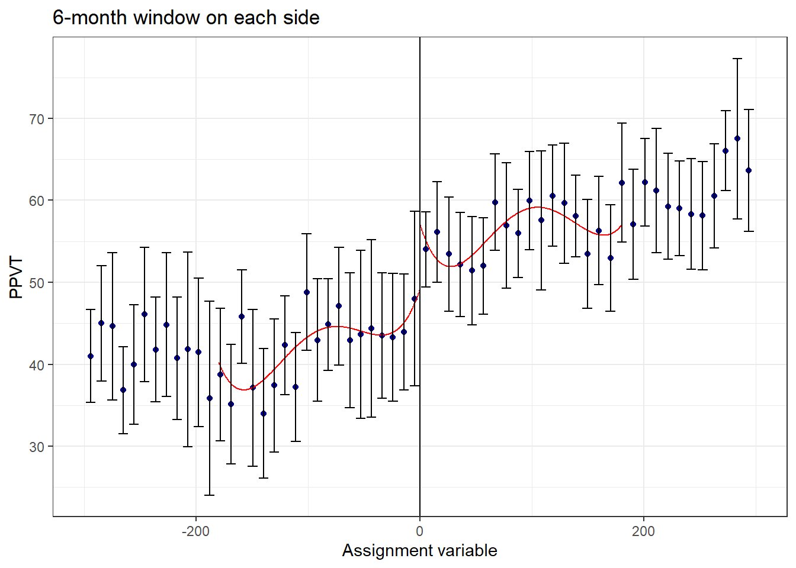
summary(plot_out)## Call: rdplot
##
## Number of Obs. 1487
## Kernel Uniform
##
## Number of Obs. 612 875
## Eff. Number of Obs. 391 524
## Order poly. fit (p) 4 4
## BW poly. fit (h) 180.000 180.000
## Number of bins scale 1 1
##
## Bins Selected 31 29
## Average Bin Length 9.645 10.310
## Median Bin Length 9.645 10.310
##
## IMSE-optimal bins 5 6
## Mimicking Variance bins 31 29
##
## Relative to IMSE-optimal:
## Implied scale 6.200 4.833
## WIMSE variance weight 0.004 0.009
## WIMSE bias weight 0.996 0.991rdrb_out = rdrobust(prek$ppvt,
prek$avar, masspoints = "off",
c = 0,
kernel = tolower(plot_out$kernel),
p = plot_out$p,
h = plot_out$h)
summary(rdrb_out) ## Call: rdrobust
##
## Number of Obs. 1487
## BW type Manual
## Kernel Uniform
## VCE method NN
##
## Number of Obs. 612 875
## Eff. Number of Obs. 391 524
## Order est. (p) 4 4
## Order bias (q) 5 5
## BW est. (h) 180.000 180.000
## BW bias (b) 180.000 180.000
## rho (h/b) 1.000 1.000
##
## =============================================================================
## Method Coef. Std. Err. z P>|z| [ 95% C.I. ]
## =============================================================================
## Conventional 7.897 6.330 1.248 0.212 [-4.510 , 20.304]
## Robust - - 0.174 0.862 [-13.694 , 16.356]
## =============================================================================The results suggest the LATE is not statistically significant with this quartic model. Again, although narrow bandwidths are less biased in estimating an effect around the cutoff, we end up with lower statistical power to detect an effect.
We might investigate the functional form again, as we did above, within this bandwidth. In the next section, we’ll skip to the quadratic, 180-day window, because this is what the authors used.
7.5.1.1 Summary about functional form
In making decisions about functional form and bandwidth with parametric models, we can use plots, the model estimates, and our knowledge of the context and the theory. Relying only on the data to tell us which bandwidth and functional form to apply is probably not wise. In conjunction with the data, we need to reason through ways that the constructs, operationalized through our variables, likely operate in the context. (This reasoning component is beyond our example, in part because we’re not experts in this example, though we can refer to Wong and colleagues’ paper).
7.6 Estimating the Effect
7.6.1 Parametric Model
After we have identified an appropriate functional form, we can fit the model. Let’s use the 180-day bandwidth with a quadratic functional form:
plot_out<- rdplot(prek$ppvt,
prek$avar, masspoints = "off",
y.lab ="PPVT", x.lab ="Assignment variable",
c = 0,
ci = 95,
h = 180,
p = 2,
title ="6-month window on each side")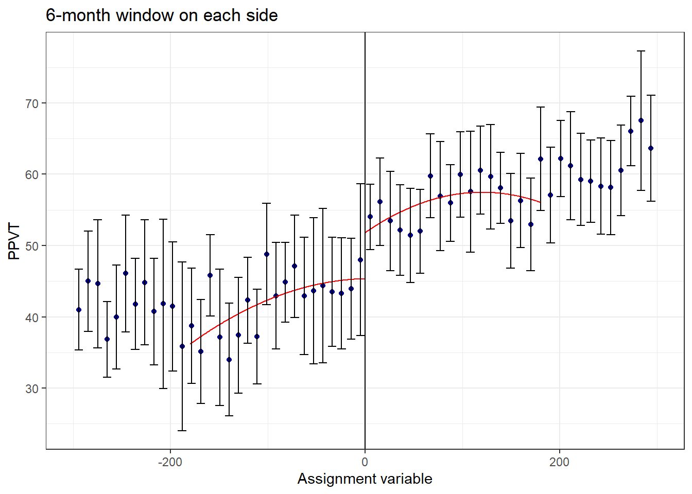
summary(plot_out)## Call: rdplot
##
## Number of Obs. 1487
## Kernel Uniform
##
## Number of Obs. 612 875
## Eff. Number of Obs. 391 524
## Order poly. fit (p) 2 2
## BW poly. fit (h) 180.000 180.000
## Number of bins scale 1 1
##
## Bins Selected 31 29
## Average Bin Length 9.645 10.310
## Median Bin Length 9.645 10.310
##
## IMSE-optimal bins 5 6
## Mimicking Variance bins 31 29
##
## Relative to IMSE-optimal:
## Implied scale 6.200 4.833
## WIMSE variance weight 0.004 0.009
## WIMSE bias weight 0.996 0.991rdrb_out = rdrobust(prek$ppvt,
prek$avar, masspoints = "off",
c = 0,
all = TRUE,
kernel = tolower(plot_out$kernel),
p = plot_out$p,
h = plot_out$h)
summary(rdrb_out)## Call: rdrobust
##
## Number of Obs. 1487
## BW type Manual
## Kernel Uniform
## VCE method NN
##
## Number of Obs. 612 875
## Eff. Number of Obs. 391 524
## Order est. (p) 2 2
## Order bias (q) 3 3
## BW est. (h) 180.000 180.000
## BW bias (b) 180.000 180.000
## rho (h/b) 1.000 1.000
##
## =============================================================================
## Method Coef. Std. Err. z P>|z| [ 95% C.I. ]
## =============================================================================
## Conventional 6.479 3.498 1.852 0.064 [-0.377 , 13.336]
## Bias-Corrected 9.552 3.498 2.730 0.006 [2.695 , 16.408]
## Robust 9.552 4.811 1.985 0.047 [0.122 , 18.981]
## =============================================================================This is interesting because the robust estimation is significant, whereas the conventional one is not, which is the reverse of what we typically expect. We see that this is because even though the robust standard errors are higher (as expected), the bias-corrected estimate is higher than the conventional estimate.45
7.6.2 Non-parametric Model: Local Linear Estimation
The case most people present for non-parametric analyses is that parametric models’ prediction lines are potentially unduly biased by observations away from the cut point. The local linear (or polynomial), non-parametric, estimation models place more weight on observations close to the cutoff point—in our LATE region.
We can think of this as fitting many tiny successive local linear models to small bins in the data, then finding a bandwidth to settle on, and examining the effect. The weights are determined by the kernel (e.g., triangular, uniform, or Epanechnikov).
Looking at plots is probably the best approach. Here, we start with the estimation (rather than the plot). This permits rdrobust to estimate (based on the data, not theory) the optimal bandwidth for the estimation. Then, we use the specifications from that output in the subsequent plot.
library(rdrobust)
rdrb_out <- rdrobust(prek$ppvt,
prek$avar, masspoint = "off",
c = 0)
summary(rdrb_out)## Call: rdrobust
##
## Number of Obs. 1487
## BW type mserd
## Kernel Triangular
## VCE method NN
##
## Number of Obs. 612 875
## Eff. Number of Obs. 195 263
## Order est. (p) 1 1
## Order bias (q) 2 2
## BW est. (h) 90.366 90.366
## BW bias (b) 148.689 148.689
## rho (h/b) 0.608 0.608
##
## =============================================================================
## Method Coef. Std. Err. z P>|z| [ 95% C.I. ]
## =============================================================================
## Conventional 8.062 3.585 2.249 0.025 [1.035 , 15.089]
## Robust - - 2.062 0.039 [0.434 , 17.188]
## ============================================================================= L <- round(rdrb_out$beta_p_l,3) #Point est of those just on the left
R <- round(rdrb_out$beta_p_r,3) #Point est of those just on the right
SideEsts <- rbind(L,R)
colnames(SideEsts) <- c("Mean","StErr")
SideEsts## Mean StErr
## L 45.762 0.035
## R 53.824 0.002Look at effective number of observations and the bandwidth estimations. Notice that the bandwidth is now about 90 days on each side; mserd is the MSE-optimal bandwidth selector (the default). This optimizes the mean-square error (MSE) in predicting the line, but at the cost of inviting bias at the cut point because of oversmoothing. In other words, the estimates at the cut are still biased because the line is smoothed based on this optimized, albeit broad, bandwidth in the local regression. The robust line shows the p-value and confidence interval with the robust bias correction. The “good news” is that the robust estimation is consistent with this conventional estimation. We should report the confidence interval of both. Here’s the plot:
(plot_out<- rdplot(prek$ppvt,
prek$avar, masspoints = "off",
y.lab ="PPVT", x.lab ="Assignment variable",
c = 0,
ci = 95,
kernel= (tolower(rdrb_out$kernel)),
h = rdrb_out$bws["h", ],
p = rdrb_out$p,
title = "Local linear sharp RD model with the triangular kernel"))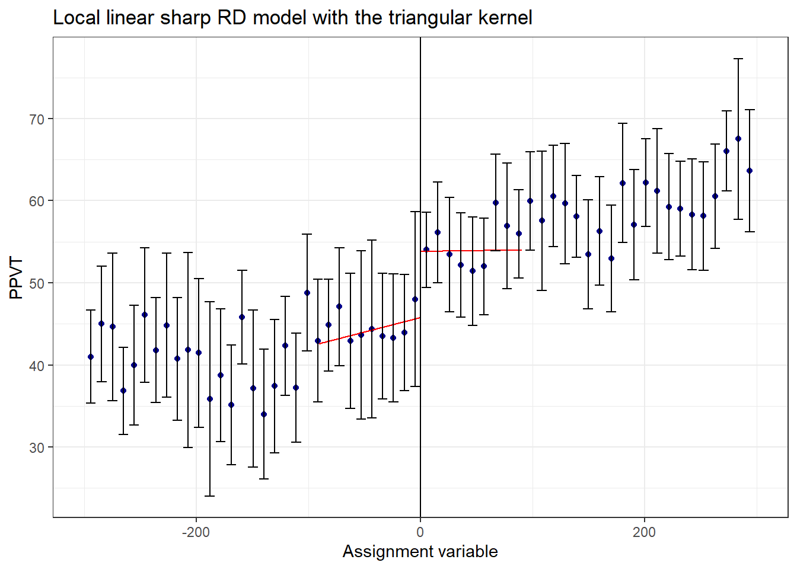
## Call: rdplot
##
## Number of Obs. 1487
## Kernel Triangular
##
## Number of Obs. 612 875
## Eff. Number of Obs. 195 263
## Order poly. fit (p) 1 1
## BW poly. fit (h) 90.366 90.366
## Number of bins scale 1.000 1.000That one used the default triangular kernel. Wong and colleagues said that they used an Epanechnikov kernel. Let’s try that and see if the result is consistent.
rdrb_out <- rdrobust(prek$ppvt,
prek$avar, masspoints = "off",
c = 0,
kernel="epanechnikov")
summary(rdrb_out)## Call: rdrobust
##
## Number of Obs. 1487
## BW type mserd
## Kernel Epanechnikov
## VCE method NN
##
## Number of Obs. 612 875
## Eff. Number of Obs. 229 305
## Order est. (p) 1 1
## Order bias (q) 2 2
## BW est. (h) 107.988 107.988
## BW bias (b) 179.966 179.966
## rho (h/b) 0.600 0.600
##
## =============================================================================
## Method Coef. Std. Err. z P>|z| [ 95% C.I. ]
## =============================================================================
## Conventional 8.038 3.159 2.544 0.011 [1.846 , 14.229]
## Robust - - 2.260 0.024 [1.123 , 15.793]
## =============================================================================Notice that the estimates are slightly different and that the bandwidth estimates are larger (107.99) than those with the triangular kernel. More assignment-variable units are included, so more observations are included, resulting in greater power.
plot_out<- rdplot(prek$ppvt,
prek$avar, masspoints = "off",
y.lab ="PPVT",x.lab ="Assignment variable",
c = 0,
ci = 95,
kernel= (tolower(rdrb_out$kernel)),
h = rdrb_out$bws["h", ],
p = rdrb_out$p,
title = "With an Epanechnikov kernel")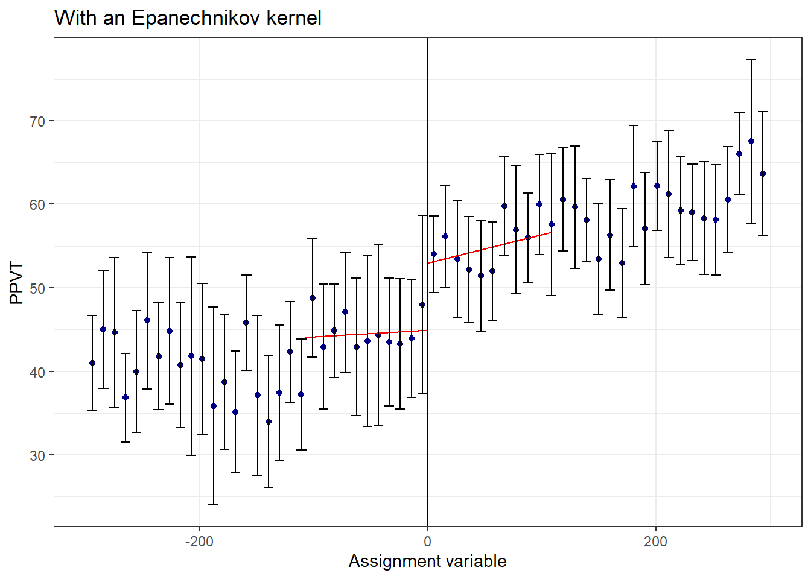
This kernal weights the mean within the bin differently than triangular (it allows a little more weight to units away from the bin’s mean). This estimation resulted in a broader bandwidth, and results that are consistent with those of the triangular kernel.
With local linear models, at least three decisions are involved in the analysis:
- Choosing a bandwidth (labeled as \(h\)). This can be a theory-informed decision, such as 180 days on either side of the cut, or a data-driven decision. In the rdrobust package, the default method for the data-driven selection is
bwselect = "mserd", which optimizes the bandwidth given the estimated variance and bias. To allow the bandwidths on either side to differ in length, the argumentbwselect = "msetwo"can be used. The rdrobust package authors document the data-driven methods in their help files and and in their accompanying monograph (Cattaneo et al., 2019). - Choosing the kernel function. Using uniform kernel is tantamount to regular OLS. Using triangular or Epanechnikov kernels weight the mean of the bin more heavily, which is better than uniform unless you have no outliers in the bin.
- Choosing the polynomial order within the bin. The authors of this package say that linear is typically a good balance between precision and stability. However, if previous research on this subject matter used other polynomials or if the data clearly do not fit the shape, we should consider higher orders.
It appears as though we have a reasonable case to make that the pre-k experience had a causal effect on students’ vocabulary knowledge, as measured by the Picture Peabody Vocabulary Test. There are two other outcomes, the print awareness, and the Woodcock Johnson test of math reasoning. We might also wish to include covariates. If the results are consistent with these other tests, we have greater confidence that discontinuous results in one are not a fluke.
7.6.3 Including covariates
We can add covariates to the estimation: In the covs = argument, we can try mycovs for all (which we had created previously), or any combination of c("female", "r_black", "r_hispanic", "r_white", "fl_yes", "hl_english", "hl_spanish").
rdrb_outC <- rdrobust(prek$ppvt,
prek$avar, masspoints = "off",
all = TRUE,
c = 0,
covs = prek[,mycovs])
summary(rdrb_outC)## Call: rdrobust
##
## Number of Obs. 1487
## BW type mserd
## Kernel Triangular
## VCE method NN
##
## Number of Obs. 612 875
## Eff. Number of Obs. 226 304
## Order est. (p) 1 1
## Order bias (q) 2 2
## BW est. (h) 106.005 106.005
## BW bias (b) 176.452 176.452
## rho (h/b) 0.601 0.601
##
## =============================================================================
## Method Coef. Std. Err. z P>|z| [ 95% C.I. ]
## =============================================================================
## Conventional 7.753 3.051 2.541 0.011 [1.773 , 13.732]
## Bias-Corrected 8.483 3.051 2.781 0.005 [2.504 , 14.462]
## Robust 8.483 3.654 2.322 0.020 [1.322 , 15.645]
## ============================================================================= L <-round(rdrb_outC$beta_p_l,3) #Point est of those just on the left
R <-round(rdrb_outC$beta_p_r,3) #Point est of those just on the right
SideEsts<-rbind(L,R)
colnames(SideEsts)<- c("Mean","StErr")
SideEsts## Mean StErr
## L 45.309 0.018
## R 53.349 0.023Let’s look at effective number of observations and the bandwidth estimations.
plot_out <- rdplot(prek$ppvt,
prek$avar, masspoints = "off",
y.lab = "PPVT",
x.lab = "Assignment variable",
c = 0,
ci = 95,
kernel = (tolower(rdrb_outC$kernel)),
h = rdrb_outC$bws["h", ],
p = rdrb_outC$p,
title ="Sharp RDD after controlling for covariates")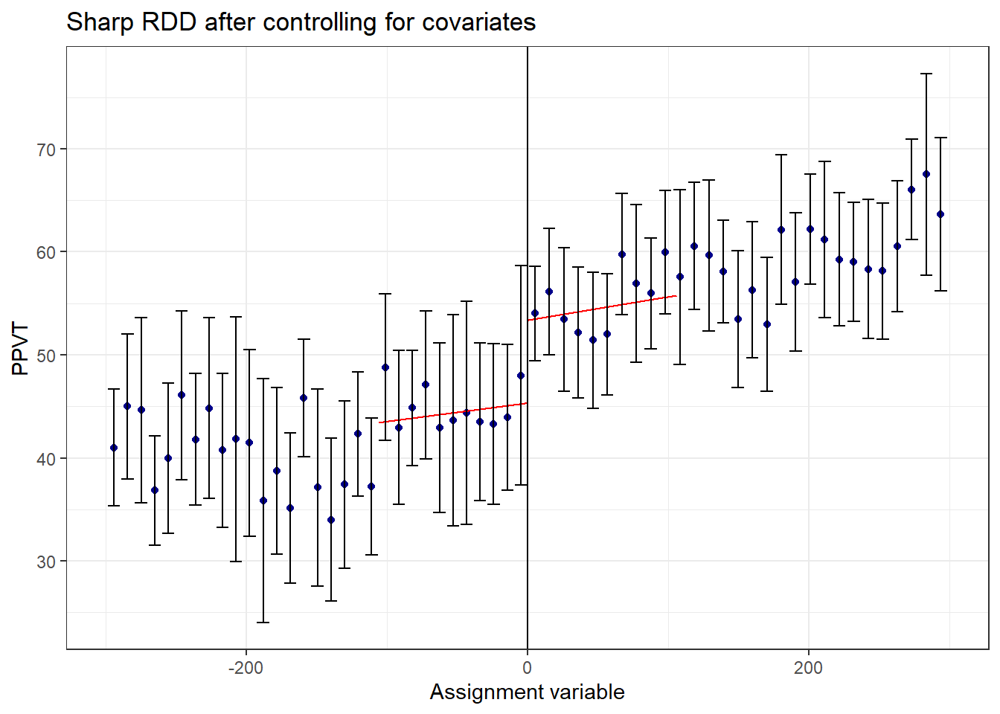
Compare that with the model having zero covariates:
rdrb_out <- rdrobust(prek$ppvt,
prek$avar, masspoints = "off",
all = TRUE,
c = 0)
summary(rdrb_out)## Call: rdrobust
##
## Number of Obs. 1487
## BW type mserd
## Kernel Triangular
## VCE method NN
##
## Number of Obs. 612 875
## Eff. Number of Obs. 195 263
## Order est. (p) 1 1
## Order bias (q) 2 2
## BW est. (h) 90.366 90.366
## BW bias (b) 148.689 148.689
## rho (h/b) 0.608 0.608
##
## =============================================================================
## Method Coef. Std. Err. z P>|z| [ 95% C.I. ]
## =============================================================================
## Conventional 8.062 3.585 2.249 0.025 [1.035 , 15.089]
## Bias-Corrected 8.811 3.585 2.457 0.014 [1.784 , 15.838]
## Robust 8.811 4.274 2.062 0.039 [0.434 , 17.188]
## ============================================================================= L <-round(rdrb_out$beta_p_l,3)
R <-round(rdrb_out$beta_p_r,3)
SideEsts <-rbind(L,R)
colnames(SideEsts) <- c("Mean","StErr")
SideEsts## Mean StErr
## L 45.762 0.035
## R 53.824 0.002plot_out <- rdplot(prek$ppvt,
prek$avar, masspoints = "off",
y.lab ="PPVT",x.lab ="Assignment variable",
c = 0,
ci = 95,
kernel = (tolower(rdrb_out$kernel)),
h = rdrb_out$bws["h", ],
p = rdrb_out$p,
title ="Sharp RDD without controlling for covariates")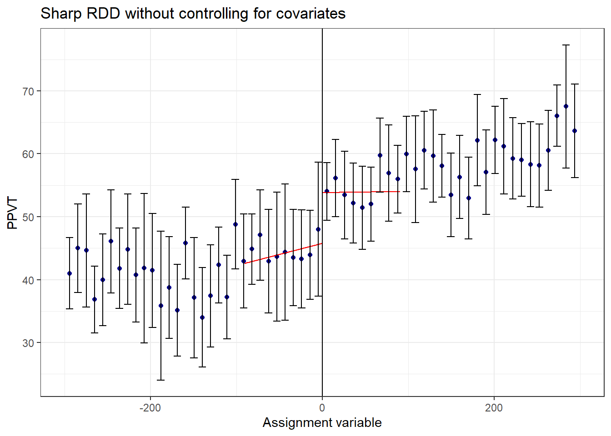
The good news is that the covariates reduced the standard error. And, the effect is about the same after controlling for these covariates. If the effect were different, or in a different direction, we should be concerned because it would indicate that differences in the covariates on the two sides of the cut explained some of the effect. Here, the covariates are increasing the statistical power. This makes us feel warm and fuzzy on the inside (at least for now).
We could try individual or combinations of covariates to see if there are any strange discontinuities when these are included. There should not be because we examined the discontinuity on the covariates, but we did not not consider all combinations of covariates, nor this bandwidth.
7.7 Sensitivity Analysis
Here, we’re checking the sensitivity of the results with different bandwidths.
We can use the rddtools package.
library(rddtools)
dat_prek <- rdd_data(y = ppvt,
x = avar,
data = prek,
cutpoint = 0 )Here is the RDD non-parametric analysis
np_ppvt <- rdd_reg_np(dat_prek, bw = rdrb_out$bws["h", "left"])
summary(np_ppvt)## ### RDD regression: nonparametric local linear###
## Bandwidth: 90.36623
## Number of obs: 458 (left: 195, right: 263)
##
## Weighted Residuals:
## Min 1Q Median 3Q Max
## -47.160 -9.470 2.607 15.433 61.592
##
## Coefficient:
## Estimate Std. Error z value Pr(>|z|)
## D 8.0620 3.4768 2.3188 0.02041 *
## ---
## Signif. codes: 0 '***' 0.001 '**' 0.01 '*' 0.05 '.' 0.1 ' ' 1
##
## Local R squared: 0.06838Let’s examine sensitivity to bandwidth choice. For help, run this, we can use help(plotSensi, package = "rddtools"). The from = is for the first bandwidth point possibility; to = is for the last bandwidth choice, usually the smallest (ignore the ggplot warnings).
sensplot <-(plotSensi(np_ppvt,
from = 140,
to = 2,
by = -2))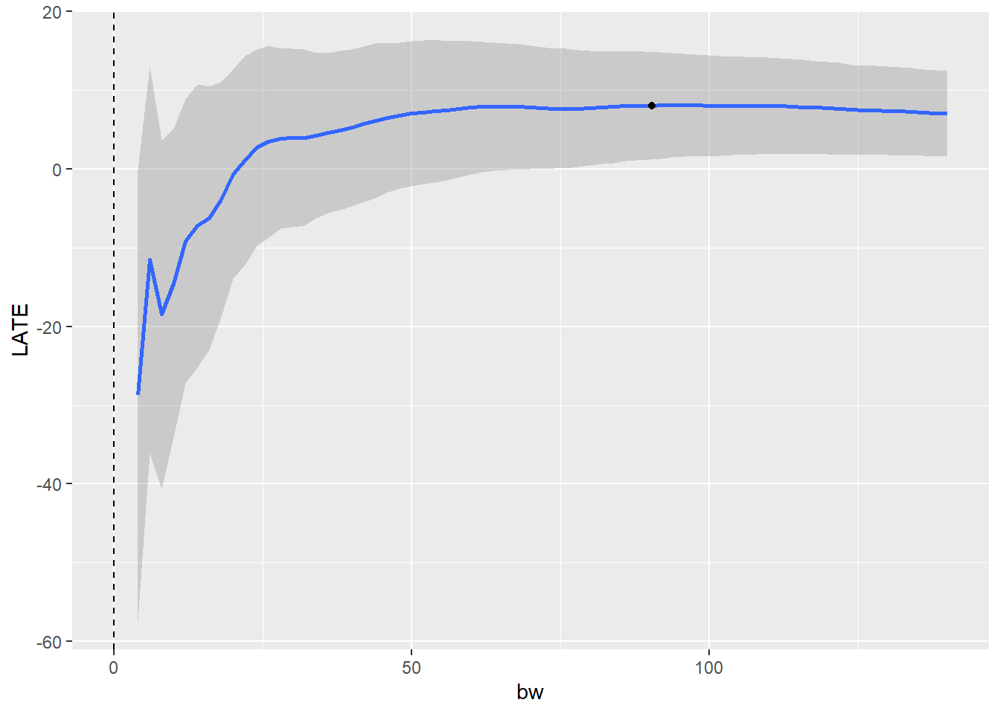
This produces the estimates across all the bandwidths. Notice that the LATE estimate becomes unstable at around smaller bandwidths, which is expected. But, see that it is now negative. That’s a red flag. Ideally, we’d like to see the treatment effect be stable across the bandwidths, at least in the direction of the estimated effect. Interestingly, the LATEs are positive until about 22, when they begin to drop below zero. We can see from the confidence interval shading that the power increases. The black dot is the bandwidth we had estimated (e.g., 90, 37). We should include this output in an appendix or describe the instability when we write our results, perhaps by also drawing from our knowledge of the subject matter theory to explain different results at different bandwidths. There might be other secular trends, functional forms, explaining the relationship between the assignment variable and the outcome variable that our model is not accounting for at some bandwidths.
7.8 Accounting for Fuzziness
Recall from our earlier examination of the data that compliance was not 100%. About 90% of the children assigned to the enter pre-K did indeed enter pre-K. About 11% of the children assigned to the control condition (i.e., asked wait an extra year before entering pre-k), still managed to get into pre-K. The estimate we are concerned with here is the complier average treatment effect (CACE), which is also a type of LATE. In fuzzy RDDs, we have two sources of localness in estimating LATE: that due to the restricted bandwidth and that due to compliance.
If we used a two-stage-least-squares approach, allowing the slopes to differ on each side, and if we used a quadratic functional form, as the authors (Wong et al., 2008) had done, we would estimate the first stage as
\[D_i = \alpha_0 + \alpha_{1}Z_i + \alpha_{2}AV_i + \alpha_{3}AV_i^2 + \alpha_{4}Z_iAV_i + \alpha_{5}Z_i AV_i^2 + \delta_i\]
and the second stage as
\[Y_i = \beta_0 + \beta_{1}\widehat{D}_i + \beta_{2}AV_i + \beta_{3}AV_i^2 + \beta_{4}Z_iAV_i + \beta_{5}Z_iAV_i^2 + \epsilon_i \text{,}\]
where \(AV\) is the continuous assignment variable (AKA forcing variable, which is avar in our data), \(Z\) is the categorical treatment-assignment variable (treatment in our data), and \(D\) is the treatment-received variable (takeup in our data).
Using the sem package (Fox et al., 2020), we can estimate the CACE using two-stage-least-squares. First, let’s restrict our data to the 6-month bandwidth, to be consistent with what the authors had done.
prek180 <- prek[prek$avar >= -180 & prek$avar <= 180, ]
library(sem)
fit_tsls_180 <- sem::tsls(ppvt ~ takeup + avar + I(avar^2) + treatment:avar + treatment:I(avar^2),
~ treatment + avar + I(avar^2) + treatment:avar + treatment:I(avar^2),
data = prek180)
summary(fit_tsls_180)##
## 2SLS Estimates
##
## Model Formula: ppvt ~ takeup + avar + I(avar^2) + treatment:avar + treatment:I(avar^2)
##
## Instruments: ~treatment + avar + I(avar^2) + treatment:avar + treatment:I(avar^2)
##
## Residuals:
## Min. 1st Qu. Median Mean 3rd Qu. Max.
## -49.8883 -12.6890 -0.4108 0.0000 11.9518 57.8302
##
## Estimate Std. Error t value Pr(>|t|)
## (Intercept) 43.9550376048 3.4487327286 12.74527 < 2e-16 ***
## takeup 9.9406039162 5.4343400532 1.82922 0.067694 .
## avar 0.0119219184 0.0662020538 0.18008 0.857127
## I(avar^2) -0.0001897455 0.0003472605 -0.54641 0.584920
## avar:treatment 0.0727906791 0.0880521867 0.82668 0.408637
## I(avar^2):treatment -0.0002050116 0.0004495561 -0.45603 0.648477
## ---
## Signif. codes: 0 '***' 0.001 '**' 0.01 '*' 0.05 '.' 0.1 ' ' 1
##
## Residual standard error: 17.2420217 on 909 degrees of freedomThis model is the fuzzy version of the 6-month quadratic model we had fit earlier with the parametric sharp RDD model. The parameter estimate for takeup is higher than it was with the sharp model but the standard error is high, too.
We get similar results if we use the rdrobust package. We specify the fuzzy = argument. The question predictor, \(D\), or takeup in our data, is the object of the argument, as in fuzzy = prek$takeup.
library(rdrobust)
Fuzzy180 <- rdrobust(y = prek$ppvt,
x = prek$avar, masspoints = "off",
fuzzy = prek$takeup,
c = 0,
h = 180,
p = 2,
kernel = "uniform")
summary(Fuzzy180)## Call: rdrobust
##
## Number of Obs. 1487
## BW type Manual
## Kernel Uniform
## VCE method NN
##
## Number of Obs. 612 875
## Eff. Number of Obs. 391 524
## Order est. (p) 2 2
## Order bias (q) 3 3
## BW est. (h) 180.000 180.000
## BW bias (b) 180.000 180.000
## rho (h/b) 1.000 1.000
##
## =============================================================================
## Method Coef. Std. Err. z P>|z| [ 95% C.I. ]
## =============================================================================
## Conventional 9.941 5.536 1.796 0.073 [-0.910 , 20.792]
## Robust - - 1.821 0.069 [-1.054 , 28.686]
## =============================================================================The robust standard error results in a confidence interval that includes zero, so it is difficult to argue that there was a causal effect due to the pre-K program with this artificial data set.
7.8.1 Fuzzy non-parametric model
We can specify a fuzzy RDD in the nonparametric model, too. Let’s allow the function to determine the bandwidth (using mserd) and allow the default triangular kernel weighting in estimating the local linear model.
library(rdrobust)
rdrb_outF <- rdrobust(y = prek$ppvt,
x = prek$avar, masspoints = "off",
fuzzy = prek$takeup,
all = TRUE,
c = 0)
summary(rdrb_outF)## Call: rdrobust
##
## Number of Obs. 1487
## BW type mserd
## Kernel Triangular
## VCE method NN
##
## Number of Obs. 612 875
## Eff. Number of Obs. 134 211
## Order est. (p) 1 1
## Order bias (q) 2 2
## BW est. (h) 69.761 69.761
## BW bias (b) 119.482 119.482
## rho (h/b) 0.584 0.584
##
## =============================================================================
## Method Coef. Std. Err. z P>|z| [ 95% C.I. ]
## =============================================================================
## Conventional 11.549 6.527 1.769 0.077 [-1.243 , 24.341]
## Bias-Corrected 11.324 6.527 1.735 0.083 [-1.468 , 24.117]
## Robust 11.324 7.669 1.477 0.140 [-3.706 , 26.355]
## =============================================================================Notice that the bandwidth, and the effective number of observations, are lower than the model in which we did not account for fuzziness. Compared to the sharp RDD model, we see a larger estimated effect but a higher standard error, which makes sense because we are accounting for cross-overs and never-takers, while also reducing the size of our analytic sample. This reduced sample size hurt the feelings of our desperate researcher hoping to find an effect—that warm and fuzzy feeling is lost. We have a smaller test statistic and a confidence interval that includes zero (even with the less conservative conventional method). In other words, when we account for the fuzziness with these data, the causal effect is not significant.
We can plot the results. The slope of the linear functional form differs from that of the sharp RDD model.
plot_outF <- rdplot(prek$ppvt,
prek$avar, masspoints = "off",
y.lab ="PPVT",x.lab ="Assignment variable",
c = 0,
ci = 95,
kernel= (tolower(rdrb_outF$kernel)),
h = rdrb_outF$bws["h", ],
p = rdrb_outF$p,
title ="Fuzzy RDD")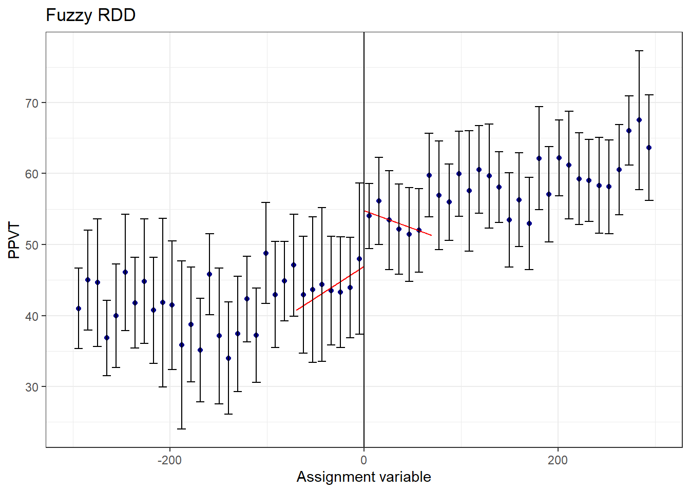
But wait! We have covariates. Let’s add them and see if we can improve the precision of our CACE estimate. This makes our model semiparametric instead of purely nonparametric because the CACE is estimated after we account for the covariates.
library(rdrobust)
rdrb_outFCQ <- rdrobust(y = prek$ppvt,
x = prek$avar, masspoints = "off",
fuzzy = prek$takeup,
all = TRUE,
c = 0,
covs = prek[,mycovs])
summary(rdrb_outFCQ)## Call: rdrobust
##
## Number of Obs. 1487
## BW type mserd
## Kernel Triangular
## VCE method NN
##
## Number of Obs. 612 875
## Eff. Number of Obs. 151 229
## Order est. (p) 1 1
## Order bias (q) 2 2
## BW est. (h) 77.264 77.264
## BW bias (b) 131.065 131.065
## rho (h/b) 0.590 0.590
##
## =============================================================================
## Method Coef. Std. Err. z P>|z| [ 95% C.I. ]
## =============================================================================
## Conventional 10.757 5.966 1.803 0.071 [-0.937 , 22.450]
## Bias-Corrected 11.108 5.966 1.862 0.063 [-0.585 , 22.802]
## Robust 11.108 7.013 1.584 0.113 [-2.638 , 24.854]
## =============================================================================plot_outFQ <- rdplot(prek$ppvt,
prek$avar, masspoints = "off",
y.lab ="PPVT",x.lab ="Assignment variable",
c = 0,
ci = 95,
kernel= (tolower(rdrb_outFCQ$kernel)),
h = rdrb_outFCQ$bws["h", ],
p = rdrb_outFCQ$p,
title ="Fuzzy RDD with covariates")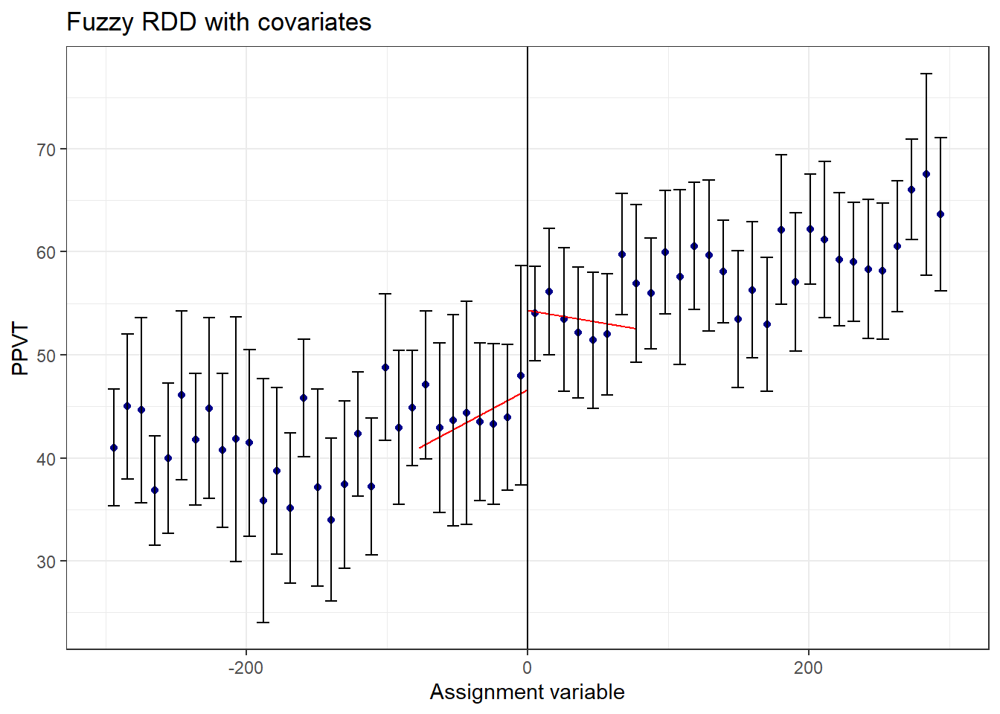
Adding covariates has not altered our statistical conclusion about the CACE with the fuzzy RD design.
7.8.2 Summary about fuzzy RDD
We saw some differences in the fuzzy and sharp RDD results. Our interpretation of the estimated causal effect in fuzzy designs is restricted to compliers. Whereas the sharp RDD is useful for research questions about the intent to treat, which may be valuable for drawing conclusions about the value of a program as it is provided in the wild, fuzzy RDD is useful for research questions about the effects of the treatment itself.
One final word. These results are from an artificial, non-representative, sample of data. The results in this demonstration are only for learning about these decisions in RDD; they are not to be used to draw conclusions about actual Pre-K programs.
References
Out of convenience, we are ignoring the cluster structure of the data in these analyses.↩︎
Because the original variable was character, we could also have more simply used the line
prek$female <- ifelse(prek$female == "female", 1, 0)but this code would not help us to detect if there are more levels of the variable. It is safer to save it as a factor and then coerce it into a numeric version, which we did by subtract 2 and reversing the sign (so, males, which were coded in the factor as 2 are coded as 0 and females, which were coded in the factor as 1 are coded as 1).↩︎In this plot, we’re adding a tiny bit of jitter to the Y axis. This spreads out the points, vertically, a little bit so it easier to see the number of observations that otherwise would be plotted on top of each other. Also, before when we use the
plot()function, we usedplot(x,y)whereas here we’re using the formula operator,plot(y ~ x)which provides the same result.↩︎With non-parametric models, the size of the first bin on each side of the cut is the bandwidth.↩︎
We can think of the term local average treatment effect (LATE) in RDD designs as having to do with the units in the bandwidth around the cutoff rather than the estimate for all units in the entire data set. In experimental designs with noncompliance, and in fuzzy RDDs, the term LATE is also about a subset of the data—it is the estimated effect on units who comply with their treatment assignment; i.e., after we account for never-takers or always-takers.↩︎
Because we’re examining intent-to-treat, we’re analyzing how they were assigned, not whether they received the treatment. In other words, we’re not using a fuzzy RDD at this point.↩︎
According to the package’s description at the time I wrote this code, it used mimicking variance bins.↩︎
For example, we are using the code
tolower(plot_out$kernel)to specify the kernel in therdrobust()function so it is the same as from our plot. Thetolower()function takes text and makes it lower case, which is needed to match the syntax of thiskernel =argument in therdrobust()function.↩︎The function defaults to “uniform” kernel, which is what is used for parametric models; in non-parametric models, we can use weighted kernels, such as triangular.↩︎
We added the argument
all = TRUEto therdrobust()function. As described in the help files for this function, this prints the three methods: The first is the conventional method; the second two estimates are bias-corrected, with conventional standard errors and robust standard errors. We can report the conventional estimate of the effect and whether the statistical conclusion is the same with the robust method, especially given that the robust method confidence intervals will be broader and therefore more conservative.↩︎